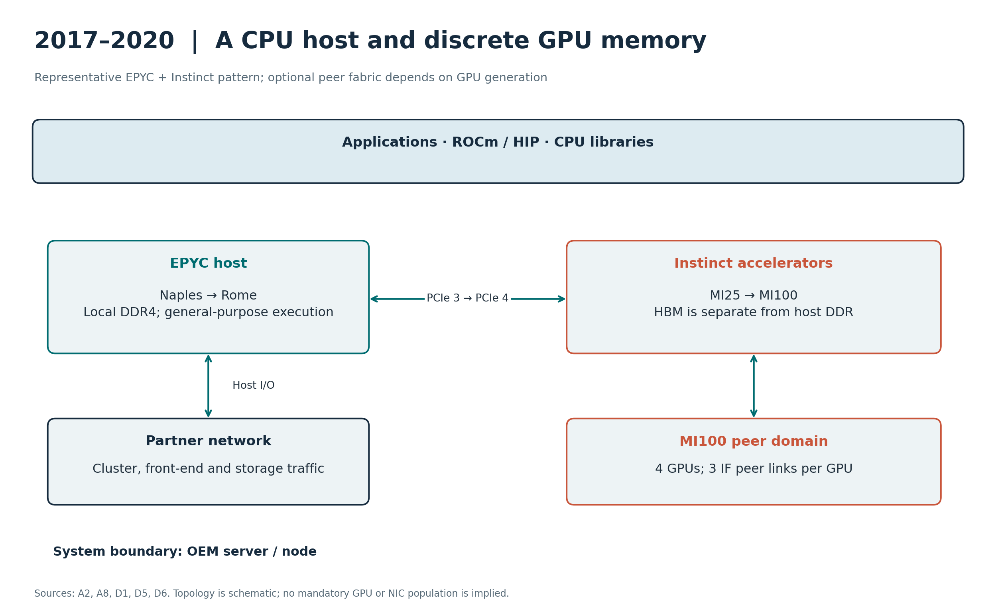
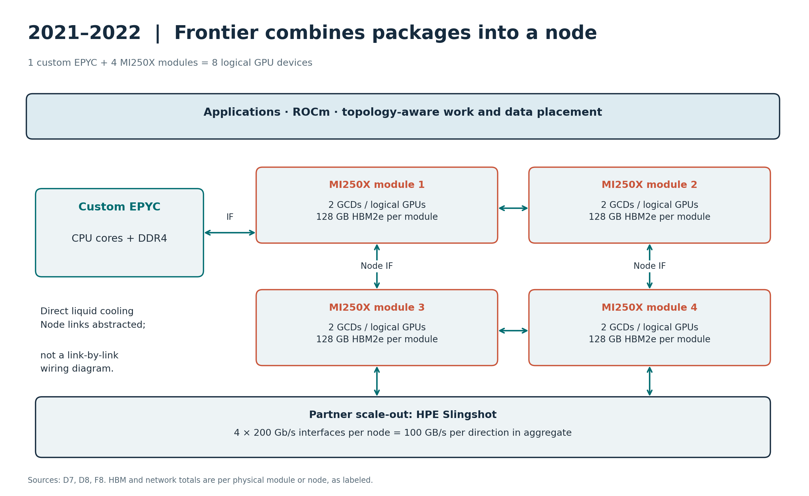
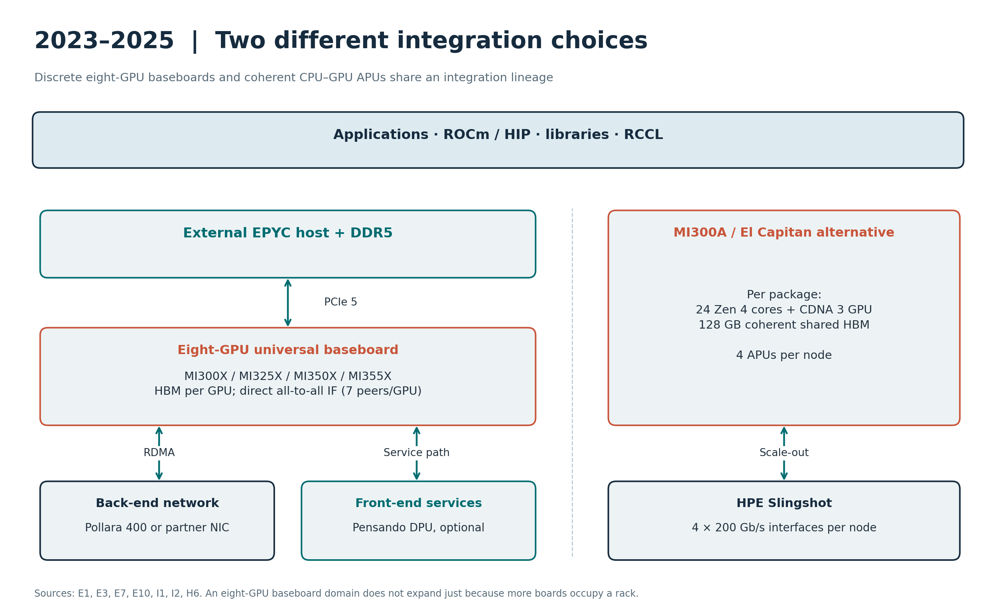
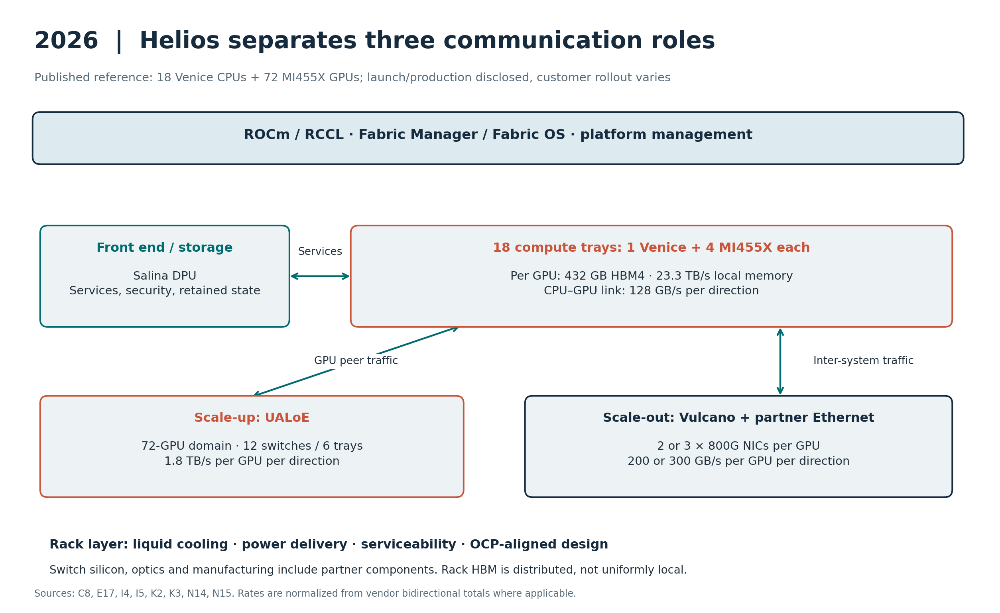

AMD AI Infrastructure: A Decade of Architectural Evolution
EPYC, Instinct, interconnect, Pensando, adaptive computing, systems and software
Research cutoff: 27 September 2026. Conference record through Hot Chips 2026, ISSCC 2026 and Advancing AI 2026; ROCm announcement coverage through August 2026. ISSCC 2027 has not yet occurred.
Families and weights: deep coverage of EPYC and Instinct; full generation-level coverage of scale-up links, Pensando DPUs and AI NICs; proportional coverage of adaptive products, systems, software and client derivatives. Start year: 2015, with earlier silicon only where it explains the first covered generation. Cutoff: 27 September 2026; product status and roadmap dates are frozen to this date. Audience and focus: experienced CPU and datacenter architects; architectural changes, physical implementation and their system consequences. Boundaries: include acquired ancestry; AMD has no separately established merchant datacenter switch-ASIC or optical-transceiver line in this reviewed portfolio, so partner switches and optics appear at the system layer. This is a product-focused disclosure survey, not a census of every AMD-affiliated paper or SKU.
Executive synthesis
AMD's server history is a sequence of changes to the boundary of a processor. Naples assembled four complete CPU SoCs. Rome moved memory and I/O into a central die and replicated smaller compute chiplets. Milan enlarged the cache-sharing domain; V-Cache added capacity vertically. Genoa and Turin then offered different combinations of core density, cache and memory bandwidth around related platforms. Venice extends the platform toward sixteen memory channels and a much larger accelerator-host role.
Instinct followed a parallel but distinct path: graphics-derived compute, a dedicated CDNA matrix architecture, two GPU dies, stacked compute chiplets, and finally a switched rack-scale accelerator domain. The relevant unit of comparison changed along the way. MI250X is one package containing two logical GPU devices. MI300X can expose eight XCDs as one GPU. Helios connects seventy-two GPUs, but its quoted rack HBM remains distributed memory rather than one uniformly local store.
Pensando fills two different requirements. DPUs place networking, security and storage services outside tenant CPU execution. AI NICs move accelerator traffic across a scale-out network. Pollara and Vulcano complement the GPU scale-up fabric; Salina addresses infrastructure services, including access to retained inference state. Xilinx adds programmable spatial processing and networking, while system design and ROCm turn component capabilities into deployable platforms.
The headline figures show that more arithmetic does not automatically create a balanced machine:
| Era / flagship pairing | CPU maximum cores; DRAM GB/s/socket | GPU dense BF16 / FP8 TFLOP/s | GPU memory capacity; TB/s | Scale-up domain |
|---|---|---|---|---|
| 2017: Naples / MI25 | 32; 170.7 | n/a / n/a | 16 GB HBM2; 0.484 | PCIe system-dependent |
| 2019–2020: Rome / MI100 | 64; 204.8 | 92.3 / n/a | 32 GB HBM2; 1.229 | 4-GPU IF hive |
| 2021–2022: Milan / MI250X | 64; 204.8 | 383 / n/a per package | 128 GB HBM2e; 3.2 | Frontier: 4 packages, 8 GPU devices |
| 2023: Genoa / MI300X | 96; 460.8 | 1307.4 / 2614.9 | 192 GB HBM3; 5.3 | 8 GPUs |
| 2024: Turin / MI325X | 128 or 192; 614.4 current | 1307.4 / 2614.9 | 256 GB HBM3e; 6.0 | 8 GPUs |
| 2025: Turin / MI355X | 128 or 192; 614.4 current | 2517 / 5033 | 288 GB HBM3e; 8.0 | 8 GPUs per baseboard |
| 2026: Venice / MI455X | 256; 1024 RDIMM / 1638.4 MRDIMM | 5033 / 20133 | 432 GB HBM4; 23.3 | 72 GPUs in Helios |
These are era pairings and representative maxima, not mandatory node bills of materials. MI455X and Venice have launch and production disclosures; broad general availability is not established by those disclosures alone. The 2026 rows describe the published platform while customer rollout proceeds. Older rows describe historically available products, without asserting that every legacy card remains orderable.
Three resource balances are particularly revealing. At current DDR5-6400 specifications, Turin offers 4.8 GB/s per core at 128 cores and 3.2 GB/s per core at 192 cores. MI355X offers roughly 0.00318 HBM bytes per dense BF16 FLOP, compared with 0.00405 for MI300X. MI455X reverses that BF16 trend to about 0.00463, but its much larger FP8 rate gives only about 0.00116 HBM bytes per FP8 FLOP. Reuse, layout and precision selection therefore remain central even after a large HBM upgrade.
The other decisive change is specialization. MI455X's published FP64 peak is 5 TFLOP/s, compared with 78.6 TFLOP/s for MI355X; the separate MI430X branch is announced for HPC in 2027. Meanwhile MI350P places CDNA 4 in a conventional PCIe card, and the dense EPYC branches choose different cache and memory resources per core. A useful comparison must follow the workload and deployment branch, not only the generation number.
The engineering direction is clear: reusable compute dies, increasingly specialized infrastructure dies, deeper integration near memory, and a wider system boundary. The costs are equally concrete: additional locality boundaries, more complex partitioning, greater package and thermal demands, and a stronger dependency on communication software. The 2027–2030 roadmap extends this direction, but its names and intended dates should not be mistaken for completed implementations.
How to read the comparisons
All compute rates are vendor peak dense rates unless marked otherwise. A multiply-add follows the vendor's two-operation convention. Per-package, per-card and per-rack quantities are identified. FP8 and microscaling formats are named; sparse figures are not substituted for dense figures. These rates are not application benchmarks.
Link figures use decimal GB/s and state direction. Gb/s is divided by eight; a quoted bidirectional total is divided by two before comparison with a per-direction figure. HBM bandwidth is compared with one direction of the link. PCIe encoding ceilings exclude transaction overhead, while Ethernet line rates exclude protocol overhead. TDP, cTDP, TBP and the newer default CPU-power terminology retain their vendor definitions.
“n/d” means not established in the reviewed primary disclosure, rather than proof that no document exists; “n/a” means not applicable. The fixed schemas are preserved in the wide comparison tables and companion CSVs. Their rows distinguish shipping, limited availability, announced, roadmap and repositioned products. A separate chronology records first material disclosure and commercial availability. Material document conflicts are called out once, beside the affected product.
1. EPYC products and technology evolution
1.1 The product sequence
| Product family | Introduction | Core architecture and maximum cores | Principal change |
|---|---|---|---|
| EPYC 7001, Naples | 2017 | Zen; 32 | Four reusable Zeppelin SoCs in one server package |
| EPYC 7002, Rome | 2019 | Zen 2; 64 | Up to eight compute chiplets around a central I/O die |
| EPYC 7003, Milan | 2021 | Zen 3; 64 | Eight cores share one 32 MB L3 within each compute chiplet |
| EPYC 7003X, Milan-X | 2022 | Zen 3; 64 | 3D V-Cache raises maximum package L3 to 768 MB |
| EPYC 9004, Genoa | 2022 | Zen 4; 96 | SP5, DDR5, PCIe 5.0, CXL and AVX-512 |
| EPYC 9004X, Genoa-X | 2023 | Zen 4; 96 | Up to 1,152 MB L3 for technical computing |
| EPYC 97x4, Bergamo | 2023 | Zen 4c; 128 | Denser cores and cache organization for cloud throughput |
| EPYC 8004, Siena | 2023 | Zen 4c; 64 | Smaller SP6 platform for edge, telco and constrained servers |
| EPYC 9005, Turin | 2024 | Zen 5; 128, or Zen 5c; 192 | Wider execution, denser compute options and faster DDR5 |
| EPYC 4004 / 4005 | 2024 / 2025 | Zen 4 / Zen 5; up to 16 | AM5 entry server branch with close desktop ancestry |
| EPYC 8005, Sorano | 2026 | Zen 5; 84 | SP6 edge and telco branch with six DDR5-6400 channels |
| EPYC 9006, Venice | 2026 | Zen 6 / Zen 6c; up to 256 | New SP7/SP8 portfolio; flagship SP7 adds 16 memory channels and PCIe 6.0 |
The main server lineage is Naples → Rome → Milan → Genoa → Turin → Venice. X variants, dense-core variants and smaller-platform variants are branches of that lineage. The numbering does not imply that every product with a later launch date introduces a new CPU core.
1.2 Naples: EPYC 7001, 2017
Naples brought AMD back into mainstream high-performance x86 servers with up to 32 cores, eight DDR4 channels and 128 PCIe 3.0 lanes. The package contained four 14 nm Zeppelin dies. Each die was a complete SoC with eight Zen cores, memory controllers, I/O and Infinity Fabric connectivity.
This was a product-family strategy from the beginning. Zeppelin could serve desktop Ryzen, high-end desktop Threadripper and EPYC by changing how many dies were packaged and how their interfaces were configured. Sharing a substantial silicon building block spread development cost across markets and avoided making a single very large server-only die.
The cost of this reuse appeared in the memory topology. Each die owned two memory channels. A core accessing another die's memory crossed the on-package fabric, so one socket contained meaningful locality boundaries. Operating-system placement, memory allocation and thread affinity mattered even before a workload crossed into a second socket. Naples should therefore be understood as a coherent multi-die server, rather than a monolithic 32-core processor with eight equally local channels.
The Zeppelin ISSCC presentation makes the difference concrete: in its illustrated configuration, local memory access was approximately 90 ns, another die's memory within the socket approximately 145 ns, and a single-hop access to the other socket approximately 200 ns. These are measurements for that configuration, but they expose the architectural cost of crossing each boundary.
Within a Zeppelin die, two four-core complexes each shared an 8 MB L3. The local cache-sharing unit was therefore smaller than the eight-core die. Distinguishing the core complex, die and socket is essential to understanding the changes that followed.
What the conferences add. Michael Clark's Zen presentation at Hot Chips 2016 introduced the core architecture. Kevin Lepak's EPYC presentation at Hot Chips 2017 explained the enterprise package and system organization. ISSCC 2017 covered the Zen implementation; ISSCC 2018's Zeppelin paper explained how one SoC supported several markets. Together, these sources show that scalability was designed into the die's interfaces and physical implementation, not added only at the packaging stage.
The important inheritance was the combination of a reusable core complex, coherent die-to-die links and a product strategy built around multiple dies. Rome retained that method while changing what belonged on each die.
1.3 Rome: EPYC 7002, 2019
Rome doubled the maximum core count to 64 and made the decisive architectural separation between compute and infrastructure. Up to eight 7 nm core complex dies, or CCDs, connected to a central 14 nm I/O die. The I/O die contained the memory controllers and external interfaces. The platform retained eight memory channels, advanced to DDR4-3200 and PCIe 4.0, and continued on the SP3 socket family.
Each eight-core CCD still contained two four-core complexes. Each complex now had 16 MB L3, giving a full CCD 32 MB and a fully populated 64-core package 256 MB. A large package-level cache total did not mean that every core had one equally local 256 MB cache.
Separating the I/O die solved several problems together. The new process could be devoted to replicated CPU logic. Memory and external I/O no longer had to be reproduced inside every compute die. AMD could vary the number of CCDs without changing the basic memory-controller organization. The desktop Ryzen 3000 family reused the Zen 2 compute-chiplet approach with a different I/O die and fewer chiplets.
Centralizing memory access made Rome's topology more regular than Naples, but did not eliminate locality. A load still traversed a CCD-to-I/O connection, and the I/O die had internal organization. NUMA Nodes Per Socket, or NPS, settings and workload placement remained relevant. Independent memory characterization at ISPASS subsequently measured the practical consequences of this hierarchy.
What the conferences add. Hot Chips 2019's Zen 2 disclosure supplies the core changes, including a larger micro-op cache and wider floating-point execution than the original Zen design. ISSCC 2020 presented both the Zen 2 core and the server/desktop chiplet architecture. ISCA 2021's industrial product paper, Pioneering Chiplet Technology and Design for the AMD EPYC and Ryzen Processor Families, explains the manufacturing and reuse rationale across Naples and Rome.
The combined lesson is that Rome's scaling was not simply the result of smaller transistors. It depended on choosing a new boundary between compute, memory control and I/O, then making that boundary economical through package and interconnect design.
1.4 Milan and Milan-X: EPYC 7003, 2021–2022
Milan retained the broad Rome platform: up to 64 cores, eight DDR4 channels, PCIe 4.0 and separate compute and I/O dies. Its defining change was inside the CCD. Zen 3 replaced the two four-core complexes with one eight-core complex sharing 32 MB L3.
This enlarged the domain in which threads could share data through the local L3. It also doubled the directly accessible L3 capacity for a core relative to a Zen 2 four-core complex, while leaving the maximum package L3 at 256 MB. The distinction explains why applications could improve substantially even though the headline core count and total cache capacity stayed unchanged.
Zen 3 also expanded execution resources and improved branch prediction and load/store throughput. Hot Chips 2021 explains those architectural changes. ISSCC 2022 connects them to an eight-slice L3 implementation using a bidirectional ring, denser SRAM choices, physical-design work and power management. This is a useful example of implementation enabling architecture: a larger sharing domain needs a practical interconnect, not just more cache bits.
Milan-X added a 64 MB SRAM die above each CCD's existing 32 MB L3. A fully populated package therefore provided 96 MB per CCD and 768 MB total L3. The added cache was part of the CPU's cache hierarchy; software did not manage it as a separate memory device.
The ISSCC 2022 3D V-Cache paper describes hybrid bonding and the high-bandwidth vertical interface. The base CCD was designed to support stacking, with cache control retained on the base die and the stacked die optimized for storage density. Hot Chips 2021's packaging tutorial places that implementation in AMD's broader integration strategy. Computex 2021 had already demonstrated the technology on a Ryzen prototype, linking the server product to the later Ryzen 7 5800X3D.
The implementation paper reports a 41 mm², 7 nm cache die, a 9 micrometre minimum TSV pitch and more than 2 TB/s of L3 bandwidth. It also reports a four-cycle latency increment. The engineering trade is therefore explicit: much more local capacity through a dense vertical interface, with an access-latency cost, rather than a free enlargement of the original cache.
The benefit is strongest when additional L3 captures a workload's reused data and avoids more expensive memory accesses. This is why engineering simulation and other technical-computing workloads were central to Milan-X's positioning. Additional cache cannot substitute for DRAM bandwidth when a workload mostly streams through data with little reuse.
Milan also introduced SEV-SNP in AMD's confidential-computing progression. Memory protection, virtualization support and platform compatibility are part of the server generation even though they are less visible in core-count comparisons.
1.5 Genoa: EPYC 9004, 2022
Genoa was a new platform as well as a new core. It increased the maximum to 96 Zen 4 cores across twelve eight-core CCDs, used 5 nm compute dies with a 6 nm I/O die, and moved to SP5. Twelve DDR5 channels replaced eight DDR4 channels. PCIe 5.0 and CXL extended the platform's connectivity.
The memory change is particularly significant. At the nominal maximum rates used here, eight DDR4-3200 channels provide 204.8 GB/s of theoretical payload bandwidth, while twelve DDR5-4800 channels provide 460.8 GB/s. The bandwidth increase exceeded the increase from 64 to 96 cores, improving the platform's nominal bandwidth per core.
Zen 4 kept the eight-core, 32 MB L3 complex and doubled private L2 from 512 KB to 1 MB per core. It added AVX-512 instructions using 256-bit execution resources. Software gained the instruction set, but an AVX-512 operation did not imply that every relevant execution datapath was physically 512 bits wide. Turin would change that implementation balance again.
Hot Chips 2023 brings the core and EPYC 9004 platform together. ISSCC 2023's Zen 4 paper supplies the circuit and physical-design view. Its high-frequency result belongs to the demonstrated core implementation and client operating points; it should not be read as a 96-core server's all-core frequency. This is a recurring reason to combine conference disclosures with final product specifications.
Genoa's desktop relative is Ryzen 7000. The common Zen 4 foundation makes client papers useful for understanding the core, but server memory channels, I/O, package power and chiplet count must be taken from EPYC-specific material.
1.6 Genoa-X, Bergamo and Siena: three different optimizations, 2023
Genoa-X extended the V-Cache approach to Zen 4. Twelve CCDs with 96 MB L3 each yielded up to 1,152 MB of package L3. Its purpose was to increase the amount of reusable working data retained near the cores while preserving the SP5 platform. Like Milan-X, it is best understood through the interaction of workload locality, cache capacity and memory traffic.
Bergamo optimized for cloud throughput and density. It used Zen 4c cores and reached 128 cores with eight sixteen-core CCDs. A Bergamo CCD contained two eight-core complexes with 16 MB L3 each. Thus, its 128-core package had 256 MB L3, compared with Genoa's 384 MB at 96 cores.
Zen 4c preserved the Zen 4 instruction-set and software foundation while optimizing the implementation for area and a different frequency/power range. ISSCC 2024 explains this distinction at the physical-design level. Dense cores are not simply ordinary cores placed closer together, nor should the shared ISA be interpreted as identical performance under every workload. Cache capacity, clock frequency, memory contention and placement all influence the resulting behavior.
Siena, sold as EPYC 8004, brought Zen 4c to a smaller single-socket SP6 platform with up to 64 cores, six DDR5 channels and 96 PCIe 5.0 lanes. It targeted edge, telecommunications and deployments constrained by power, physical size or platform cost. Reducing the surrounding platform was as important as changing the core implementation.
AMD's June 2023 Data Center and AI Technology Premiere introduced Bergamo and Genoa-X; Siena followed in September. Hot Chips 2023 supplies the architectural framework for understanding this family. MWC presentations then show why Siena's attributes matter in telecommunications systems.
These products mark a change in how to read the EPYC roadmap: the question becomes which balance of resources fits the workload. Maximum core count, maximum cache capacity and the smallest practical system are three different objectives.
1.7 Turin: EPYC 9005, 2024
Turin extended SP5 with two major compute options: up to 128 Zen 5 cores using sixteen eight-core CCDs, or up to 192 Zen 5c cores using twelve sixteen-core CCDs. The mainstream Zen 5 implementation uses 4 nm compute technology; the dense implementation uses 3 nm. Both connect to the server I/O infrastructure and support twelve DDR5 channels, listed at DDR5-6000 in the April 2025 architecture guide and now at DDR5-6400 on the current 9755 and 9965 product pages. The current comparison therefore uses 614.4 GB/s per socket; the older 576 GB/s figure describes the earlier published configuration.
The maximum cache organizations differ. An eight-core Zen 5 CCD has 32 MB L3, yielding 512 MB across sixteen CCDs. The sixteen-core Zen 5c CCD also has 32 MB L3, yielding 384 MB across twelve CCDs. Unlike Bergamo's two-complex CCD, the EPYC 9005 architecture overview describes one complex per CCD for both Turin variants. This changes the local sharing domain and is an important detail that core-count summaries omit.
Hot Chips 2024 describes Zen 5's expanded front end, execution resources and memory subsystem. The 48 KB L1 data cache, larger execution capacity and increased data bandwidth support more work per core. In the server implementation, full-width 512-bit floating-point execution strengthens vector capability. The ISSCC 2025 paper complements this with the 4 nm core-complex implementation and explains why configurations across product segments need to be distinguished.
The EPYC-specific architecture guide adds a less prominent but valuable detail: selected “wide” products connect each CCD to two GMI links rather than one, increasing the bandwidth between the compute chiplet and I/O die. Package DRAM bandwidth alone therefore does not fully describe the resources available to a particular core population.
Turin launched at Advancing AI in October 2024. Google Cloud Next 2025 connected the generation to C4D and H4D virtual machines. Those cloud disclosures add workload and deployment context; the core and package organization still come from Hot Chips, ISSCC and the EPYC technical documents.
At maximum dense-core count, memory remains a key balance: 614.4 GB/s of nominal DDR5 bandwidth divided among 192 cores is 3.2 GB/s per core. The same memory interface divided among 128 cores is 4.8 GB/s per core. The dense version can deliver more aggregate work when the workload supports that tradeoff, but more cores do not guarantee proportionally more memory throughput.
1.8 Venice: EPYC 9006, 2026
By the report cutoff, Venice had moved beyond roadmap previews. AMD launched the sixth-generation EPYC portfolio at Advancing AI on 23 July 2026 and published EPYC 9006 product specifications. The family uses Zen 6 and Zen 6c and expands into SP7 and SP8 platforms. Production ramp and partner validation are documented, but a portfolio-wide GA date is not; this report classifies the new generation as limited availability at the cutoff.
The flagship EPYC 9996 specification provides a concrete reference point: 256 cores, 512 threads, 1,024 MB L3, sixteen memory channels and PCIe 6.0 x96 on SP7. AMD lists DDR5 RDIMM rates up to 8,000 MT/s and MRDIMM rates up to 12,800 MT/s, corresponding to approximately 1.024 TB/s and 1.638 TB/s per socket. Its stated default CPU power is 600 W with a 400–600 W range.
The platform change matters more than the core-count increment alone. Relative to SP5, the flagship adds memory channels and a new I/O generation. AMD's Taiwan ecosystem announcement also identifies 2.5D Elevated Fanout Bridge packaging for Venice, extending advanced-package methods into this CPU generation.
AMD presents SP8 for enterprise and general-purpose systems, alongside SP7's larger platform. Its portfolio page also identifies 9006X and an AI-host-oriented 9006 LP branch. Detailed availability and specifications should be read by individual product rather than assumed to be identical across the entire family.
Venice also serves a system role in Helios, whose announced configuration combines eighteen EPYC CPUs with seventy-two Instinct MI455X GPUs. The CPU is responsible for host-side execution and data movement in a much larger accelerator system.
The 2026 public sources reviewed here provide a firmer basis for describing the platform than for reconstructing every Zen 6 internal structure. The Hot Chips 2026 program contains AMD's MI400 architecture and system talks, but does not establish an equivalent Zen 6 CPU disclosure. This report therefore does not assign unverified pipeline or cache-topology details to Venice.
1.9 Smaller servers, edge systems and a custom HBM branch
EPYC 4004 and 4005 extend the server brand into AM5 systems with up to sixteen cores. The former uses Zen 4 and the latter Zen 5. Their close relationship to the desktop platform is useful for understanding their economics and core technology, while server validation and the intended deployment distinguish the products. They do not offer the memory-channel and I/O scale of SP5 EPYC.
EPYC 8005, introduced in 2026 and codenamed Sorano in AMD's architecture guide, advances the SP6 branch to up to 84 Zen 5 cores. AMD specifies six DDR5-6400 channels, 96 PCIe 5.0 lanes and a 70–225 W product range. The 84-core 8635P has 384 MB L3, arranged as twelve CCDs with seven enabled cores and 32 MB L3 per CCD; the guide specifies 1 MB L2 per core and up to 48 lanes of CXL 2.0. Its deployment focus includes telecommunications, edge services and storage. This is a continuation of platform specialization, rather than a replacement for the larger EPYC line.
A particularly instructive branch is the custom EPYC implementation behind Microsoft's Azure HBv5. The SCA/HPCAsia 2026 paper describes CPU and cloud co-design for memory-bandwidth-bound HPC, using HBM with a Genoa-based design. Microsoft's current VM documentation lists 368 usable CPU cores, 432 GB of memory and 6.7 TB/s of memory bandwidth for the largest HBv5 configuration. These are VM-level resources, not specifications for a retail single-socket EPYC.
HBv5 demonstrates that the technology shared by EPYC and Instinct extends beyond CPU core IP: advanced packaging and HBM can also support a CPU-centric cloud system. Its architecture belongs in the EPYC story, but should not be conflated with MI300A or a generally available socketed Genoa SKU.
1.10 What changed in memory bandwidth per core?
The following arithmetic isolates one resource balance. It uses nominal maximum memory rates, fully populated channels and the representative maximum core counts shown. Bandwidth is theoretical payload bandwidth before protocol, access-pattern and software effects; these are not benchmark results.
| Configuration | Channels and data rate | Calculated GB/s per socket | Cores | Calculated GB/s per core |
|---|---|---|---|---|
| Naples | 8 × DDR4-2667 | 170.7 | 32 | 5.33 |
| Rome / Milan | 8 × DDR4-3200 | 204.8 | 64 | 3.20 |
| Genoa | 12 × DDR5-4800 | 460.8 | 96 | 4.80 |
| Bergamo | 12 × DDR5-4800 | 460.8 | 128 | 3.60 |
| Siena | 6 × DDR5-4800 | 230.4 | 64 | 3.60 |
| Turin, Zen 5 | 12 × DDR5-6400, current | 614.4 | 128 | 4.80 |
| Turin, Zen 5c | 12 × DDR5-6400, current | 614.4 | 192 | 3.20 |
| Sorano | 6 × DDR5-6400 | 307.2 | 84 | 3.66 |
| Venice 9996, RDIMM | 16 × DDR5-8000 | 1,024.0 | 256 | 4.00 |
| Venice 9996, MRDIMM | 16 × DDR5-12800 | 1,638.4 | 256 | 6.40 |
Calculation: channels × transfers per second × 8 payload bytes per channel. The table shows why cache-rich products, higher-bandwidth memory and fewer-core high-frequency products remain useful even as maximum core count rises. It also shows why a simple ranking by cores misses much of the engineering story.
1.11 Cache-sharing domains across EPYC generations
| Product | Full compute-die organization | L3 within one sharing domain | Maximum package L3 |
|---|---|---|---|
| Naples | 2 complexes × 4 cores per Zeppelin SoC | 8 MB / 4 cores | 64 MB |
| Rome | 2 complexes × 4 cores per CCD | 16 MB / 4 cores | 256 MB |
| Milan | 1 complex × 8 cores per CCD | 32 MB / 8 cores | 256 MB |
| Milan-X | 1 complex × 8 cores, with stacked cache | 96 MB / 8 cores | 768 MB |
| Genoa | 1 complex × 8 cores per CCD | 32 MB / 8 cores | 384 MB |
| Genoa-X | 1 complex × 8 cores, with stacked cache | 96 MB / 8 cores | 1,152 MB |
| Bergamo | 2 complexes × 8 cores per CCD | 16 MB / 8 cores | 256 MB |
| Turin, Zen 5 | 1 complex × 8 cores per CCD | 32 MB / 8 cores | 512 MB |
| Turin, Zen 5c | 1 complex × 16 cores per CCD | 32 MB / 16 cores | 384 MB |
The table describes full architectural complexes; individual SKUs may disable cores or populate fewer chiplets. Package cache totals are sums of distributed L3 resources. The progression is not monotonic in cache per core: the cloud-density branches intentionally make different choices. Milan and Turin Zen 5c also show why the number of cores sharing one L3 must be tracked independently from the total cores on a die.
1.12 Core implementation: feeding wider execution
The change from Zen to Zen 5 is more than an ISA progression. Zen established SMT, an op cache, out-of-order execution and a private-cache hierarchy that could be replicated in a CCX. Zen 2 widened floating-point execution to 256 bits. Zen 3 enlarged the execution window and load/store capacity while joining eight cores behind one L3. Zen 4 added a larger private L2 and AVX-512 instructions without making the entire floating-point path 512 bits wide.
Zen 5 makes the front-end and data-path expansion explicit. Its two fetch/decode paths feed eight-wide dispatch, while a larger reorder window lets the core find more independent work. The Hot Chips slides disclose a 448-entry retire/ROB capacity in single-thread mode and 224 entries per thread in two-thread mode. Six ALUs and four AGUs provide more execution opportunity, but sustained utilization still requires predictable branches, independent operations and data delivery.
The server implementation's 48 KB L1 data cache retains a four-cycle load-to-use target. The core can handle four memory addresses per cycle, with a maximum of two 512-bit loads or one 512-bit store through the vector-width paths. The published two-load/one-store capacities should not be read as all independent maxima occurring simultaneously without resource constraints. Wider L2-to-core paths and a new two-dimensional stride prefetcher address the feeding problem. L3 retains a victim relationship to L2, with duplicated L2 tags used for probe filtering.
| Core | Front end and dispatch | Execution window | Load/store and vector | Local caches | Sources |
|---|---|---|---|---|---|
| Zen | 32 B fetch; 4 x86 decode; 6 micro-op dispatch | 192-entry retire queue; SMT2; 72-load / 44-store queues | 2 loads + 1 store resources; 128-bit FP | 64 KB I; 32 KB D; 512 KB L2; 8 MB L3/4 cores | A1 A3 |
| Zen 2 | Larger op cache and improved prediction; 6-wide dispatch | 224-entry ROB in Zen 3 comparative disclosure | 256-bit FP; baseline 2 loads/1 store per cycle | 32 KB I; 32 KB D; 512 KB L2; 16 MB L3/4 cores | A5 A6 B2 |
| Zen 3 | 4-decode / up to 8 op-cache ops; 6 macro-op dispatch | 256-entry ROB; larger integer/FP issue capacity | 3 loads/2 stores; 256-bit FP; FMA latency 4 cycles | 32 KB I; 32 KB D; 512 KB L2; 32 MB L3/8 cores | B1 B2 B3 |
| Zen 4 / 4c | Larger op cache; improved branch prediction and dispatch | Retire and load/store queues enlarged; numeric sizes n/d in reviewed slides | AVX-512 on 256-bit resources; BF16/VNNI | 32 KB I; 32 KB D; 1 MB L2; L3 32/16 MB per 8-core CCX | B8 B9 B10 |
| Zen 5 server | 2 x32 B fetch; 2 x4 decode; 6K op cache; 8-wide dispatch | ROB 448 entries 1T / 224 per thread 2T; 240 integer physical registers | 6 ALU, 4 AGU; 4 memory addresses/cycle; 2 x512-bit loads or 1 x512-bit store capacity | 32 KB I; 48 KB 12-way D, 4-cycle load-to-use; 1 MB 16-way L2 | C1 C2 C3 |
| Zen 6 / 6c | n/d in reviewed public technical record | n/d | n/d; avoid deriving ISA from branding | 9996 package L3 1024 MB; private caches and sharing topology n/d | C8 N30 N31 |
Zen 4c and Zen 5c share an ISA foundation with their larger counterparts, but physical design and cache sharing change the system balance. Hot Chips reports about 35% less core-plus-L2 area for Zen 4c than Zen 4. That is a disclosed implementation comparison, not a universal area or performance multiplier. Dense products make sense when aggregate throughput and energy at the intended operating point outweigh lower per-core cache capacity or frequency.
1.13 Fabric, memory configuration and the accelerator-host role
The I/O die makes the socket easier to scale, but it is also a shared traffic junction. A core miss crosses a CCD link before reaching a memory controller; a remote-socket access adds xGMI. NPS settings describe how memory-controller locality is exposed, while the CCX describes a cache-sharing domain. These are different partitions. Increasing the number of NUMA nodes can help locality-sensitive software and complicate placement at the same time.
SP5 systems can allocate high-speed links between PCIe and socket connectivity. The common single-socket maximum is 128 PCIe lanes; a two-socket configuration does not simply double that number because socket links consume resources. The Turin guide gives a 160-lane system configuration with three xGMI links. CXL-capable lanes are a subset of the I/O budget, not extra lanes added to the headline total. A CXL memory device also has a different latency and bandwidth path from local DDR.
An AI host therefore needs to be selected using the actual board topology: which CPU owns each GPU or NIC, how PCIe switches are arranged, whether peer DMA is supported on that route, and how host memory is populated. A processor with more cores can be a worse fit for a GPU host if it leaves insufficient I/O or memory bandwidth for the required traffic. Conversely, CPU inference and preprocessing may benefit from AVX-512, BF16/VNNI, cache capacity and frequency even when no discrete GPU is present.
Security and RAS evolve alongside performance. Naples introduced the EPYC SEV lineage; later implementations added protection of guest execution state, and Milan introduced SEV-SNP's stronger integrity model. The current Infinity Guard and SEV documentation must be read with platform firmware and hypervisor requirements. Memory ECC, error containment and server validation belong to the usable system, not merely the core microarchitecture.
CPU power ratings do not specify one sustained frequency for every workload. Core population, instruction mix, memory traffic, thermal conditions and configured power limits determine the operating point. High-frequency, cache-rich, dense-core and low-power SKUs deliberately sit at different points on that curve. The family tables report maxima; selecting a concrete system requires its exact OPN and memory configuration.
1.14 Implementation limits in the public record
The Sorano architecture guide contains conflicting 4 nm and 5 nm statements and inconsistent memory-capacity wording relative to the data sheet. Its topology and cache capacity are independently corroborated by the product specifications; its process node is left unresolved here. The guide's single-socket product context also takes precedence over generic socket-link language copied into the document.
For Venice, the reviewed record establishes the N2 compute direction, EFB packaging and published socket resources. It does not yet support a full Zen 6 pipeline, private-cache, coherence-directory or die-to-die energy reconstruction. This is a specific disclosure gap, not a reason to infer those structures from Zen 5 or from the 1,024 MB package-cache total.
Source map: A1–A10; B1–B15; C1–C12; G1, G4, G13, G18; N1–N4, N20, N22, N23, N30–N33, N39, N45–N48, N50. Full references appear in the bibliography; numerical cells are indexed in the companion claims ledger.
2. Instinct products and technology evolution
2.1 The product sequence
| Product | Introduction | Architecture | Representative memory | Principal change |
|---|---|---|---|---|
| Radeon Instinct MI6 / MI8 / MI25 | Announced 2016; 2017 generation | Polaris / Fiji / Vega | 16 GB GDDR5 / 4 GB HBM / 16 GB HBM2 | Compute portfolio assembled from graphics-derived architectures |
| Radeon Instinct MI50 / MI60 | 2018 | Vega 20 | MI60: 32 GB HBM2, about 1 TB/s | 7 nm, stronger FP64 and GPU-to-GPU fabric |
| Instinct MI100 | 2020 | CDNA | 32 GB HBM2, 1.23 TB/s | Dedicated compute architecture and matrix execution |
| Instinct MI250 / MI250X | 2021 | CDNA 2 | 128 GB HBM2e, 3.2 TB/s per package | Two GPU compute dies and exascale node integration |
| Instinct MI210 | 2022 | CDNA 2 | 64 GB HBM2e, 1.6 TB/s | Single-die PCIe branch |
| Instinct MI300A | 2023 | Zen 4 + CDNA 3 | 128 GB shared HBM3, 5.3 TB/s | CPU and GPU chiplets share coherent physical memory |
| Instinct MI300X | 2023 | CDNA 3 | 192 GB HBM3, 5.3 TB/s | Eight stacked GPU compute chiplets, optimized for accelerator systems |
| Instinct MI325X | 2024 | CDNA 3 | 256 GB HBM3e, 6.0 TB/s | Memory-capacity and bandwidth refresh |
| Instinct MI350X / MI355X | 2025 | CDNA 4 | 288 GB HBM3e, 8.0 TB/s | Stronger matrix engines, low-precision formats and revised I/O partitioning |
| Instinct MI350P | 2026 | CDNA 4 | 144 GB HBM3e, 4.0 TB/s | PCIe card for conventional server infrastructure |
| Instinct MI455X, MI400 family | 2026 | CDNA 5 | 432 GB HBM4, 23.3 TB/s | New execution organization and rack-scale Helios integration |
Memory bandwidth is per accelerator package or card. MI250X contains two software-visible GPU devices, so its package totals should not be confused with the resources visible to one device. Published memory capacities follow AMD's product naming convention.
2.2 The prelude and first Radeon Instinct generation, 2015–2017
The first Radeon Instinct portfolio was announced in December 2016. MI6, MI8 and MI25 drew on Polaris, Fiji and Vega respectively. The product name united devices with materially different memory systems: GDDR5 for MI6, first-generation HBM for MI8 and HBM2 for MI25.
Fiji's earlier use of HBM is important background. Placing wide memory interfaces beside a GPU in an advanced package established a practical route to high bandwidth without relying solely on ever-faster external DRAM interfaces. This packaging and memory lineage continued into Instinct even as the compute architecture changed.
MI25's Vega architecture remains closely connected to Radeon Vega graphics. Hot Chips 2017's Vega presentation explains the programmable compute organization, packed arithmetic and memory-system ideas behind that generation. The server product additionally depended on accelerator packaging, cooling, reliability and software.
At this stage, the story is one of adapting a broad GPU architecture to compute markets. It should not be retroactively described as CDNA. AMD's ROCm software effort was also becoming an essential part of the platform: an accelerator's usefulness depended on compiler, runtime and library support as well as peak arithmetic rates.
2.3 MI50 and MI60: Vega 20, 2018
MI50 and MI60 arrived at AMD's Next Horizon event in November 2018. Vega 20 moved the compute product to 7 nm and strengthened the HPC proposition through high-rate FP64 arithmetic, HBM2 bandwidth around 1 TB/s, PCIe 4.0 and direct GPU-to-GPU Infinity Fabric connectivity. MI60 provided 32 GB of HBM2; MI50 existed in more than one memory-capacity configuration.
The important change was broader than process scaling. Scientific workloads needed double-precision arithmetic and reliable movement of large data sets, while multi-accelerator applications needed communication paths that avoided unnecessary host-mediated transfers. MI50/MI60 addressed those requirements while retaining Vega ancestry.
Radeon VII used related Vega 20 technology in a desktop product. That connection is useful for tracing silicon reuse, but the compute products' validated capabilities and server configuration should be taken from Instinct documentation.
Next Horizon is a particularly informative industry event in this history: it combined the 7 nm GPU announcement with Rome's server direction. Both product lines were beginning to turn leading-edge process technology and fabric connectivity into data-center platforms.
2.4 MI100: the first CDNA generation, 2020
MI100 established CDNA as AMD's dedicated data-center compute architecture. It combined 120 compute units with 32 GB of HBM2 and approximately 1.23 TB/s memory bandwidth. Its matrix instructions and execution resources made matrix multiplication a first-class architectural function rather than relying solely on conventional vector instructions.
The separation from RDNA is central. RDNA developed around graphics and gaming priorities; CDNA developed around compute, matrix arithmetic, scientific precision and scaling. Both are GPU architectures, but conclusions about execution width, caches or instruction behavior cannot be transferred from one to the other simply because both carry AMD branding.
The CDNA white paper explains the compute-unit and matrix organization. AMD's November 2020 announcements, aligned with the HPC community's SC season, place MI100 in an EPYC-based system and software context. The generation retained a large single GPU compute die, so it is the last major Instinct step before compute itself was split across dies.
For historical comparisons, MI100 is a useful starting point for the dedicated compute lineage. It is less useful to compare its peak FP64 number directly with a later generation's FP8 or FP4 headline: those measure different arithmetic and often different execution paths.
2.5 MI200: CDNA 2, MI250/MI250X and MI210, 2021–2022
MI250 and MI250X moved Instinct to a two-die GPU package. MI250X combined two 6 nm graphics compute dies, or GCDs, with eight HBM2e stacks, 128 GB total memory and 3.2 TB/s aggregate memory bandwidth. The package had 220 active compute units. MI210 brought CDNA 2 to a single-die PCIe card with 64 GB and 1.6 TB/s.
A crucial software detail is that MI250X's two GCDs are exposed as two GPU devices. One physical accelerator module is therefore not automatically one flat GPU programming domain. Work assignment and communication between the two devices remain part of application design.
CDNA 2 strengthened matrix computation, including high-precision work relevant to HPC, and developed coherent CPU/GPU connectivity. Coherence and unified addressing, however, do not make host DDR memory and GPU HBM one physical memory pool. Their location, bandwidth and capacity remain distinct.
Hot Chips 2022 is the key architectural disclosure because it discusses both the MI200 accelerator and node organizations. Frontier's node combines one custom EPYC CPU with four MI250X modules, yielding eight GPU devices. The topology, including accelerator and network connections, is part of how the machine sustains useful scaling.
The VLSI 2023 paper on MI250X's Elevated Fanout Bridge packaging supplies an implementation complement. It explains the packaging technology that allows the two large compute dies and their HBM resources to form a practical accelerator. ISCA 2023's exascale retrospective then explains the path from research alternatives to the delivered Frontier architecture.
Reading these together avoids an incomplete interpretation of Frontier as merely a collection of fast GPUs. CPU/GPU interaction, memory access, node networking, power and application co-design all shaped the final system. Frontier also provided a major software and operational proving ground before the more integrated MI300A design.
2.6 MI300A: a CPU–GPU processor with shared HBM, 2023
MI300A combines twenty-four Zen 4 CPU cores with CDNA 3 GPU compute and 128 GB of HBM3 in one package. Its compute layer contains three CPU CCDs and six accelerator complex dies, or XCDs, over four I/O dies. The CPU and GPU share a coherent physical HBM memory system with approximately 5.3 TB/s aggregate bandwidth.
That physical integration changes the programming problem. A CPU phase and GPU phase can operate on shared data without requiring the same explicit host-DRAM-to-device-HBM copy pattern as a conventional discrete accelerator. Synchronization and efficient data access still matter; shared memory is a capability, not an automatic performance guarantee.
The design draws directly on both EPYC and Instinct. The Zen 4 CCDs adapt the CPU chiplet for stacked integration, while the GPU XCDs are designed for the vertical interface. ISCA 2024 explains how AMD accommodated the different chiplet footprints and interfaces on a reusable I/O-die design. It also explains the engineering history: earlier exascale APU concepts were constrained by packaging, manufacturing and thermal practicality, while MI300A could draw on more mature integration techniques.
ISSCC 2024's MI300 package paper supplies the implementation view. The package combines leading-edge compute, infrastructure dies and HBM rather than building everything as one enormous logic die. The same general assembly strategy can support different mixtures of CPU and GPU compute.
El Capitan turns that architectural idea into a system. LLNL documents four MI300A APUs per compute node, giving ninety-six CPU cores and 512 GB of shared-package memory across the node. SC24 marked the system's major public performance milestone. This deployment provides context for why MI300A was designed as a heterogeneous HPC processor, even while the wider MI300 family also pursued AI.
The deepest academic reading sequence for this product is HPCA 2017's exascale APU proposal, ISCA 2023's Frontier retrospective and ISCA 2024's account of realizing the heterogeneous processor. The sequence explains both the continuity of the idea and the changes required to make a commercial implementation possible.
2.7 MI300X: CDNA 3 for large accelerator systems, 2023
MI300X uses the MI300 integration platform for a different balance: eight GPU XCDs, four I/O dies and eight HBM3 stacks provide 304 active compute units, 192 GB of memory and approximately 5.3 TB/s bandwidth. The CPU remains external to the accelerator.
This is the key distinction from MI300A. Both products use closely related packaging and compute technology, but only MI300A integrates Zen CPU cores into the shared-HBM processor. MI300X's large HBM does not, by itself, turn the host CPU's memory into a single physical pool with the accelerator.
Hot Chips 2024 explains MI300X at the package and platform levels. In its eight-accelerator baseboard, each GPU has direct connections to the other seven. The presentation's aggregate 896 GB/s per-GPU interconnect figure is bidirectional. It must not be compared without adjustment to a one-direction bandwidth number from another system.
MI300 also changes the relationship between physical chiplets and logical devices. The GPU can be presented as one large device across multiple XCDs, while supported partitioning modes divide resources for other deployment needs. Compute partitioning and memory partitioning are related but distinct configuration choices.
The combination of ISSCC 2024, ISCA 2024 and Hot Chips 2024 provides an unusually complete picture: physical construction, the rationale for the heterogeneous platform, and the organization of the AI-oriented accelerator and baseboard. The later IEEE Micro article on MI300X interconnect design adds detail; it is a journal article, not a paper at the MICRO conference.
MI300X launched at Advancing AI in December 2023. Microsoft Ignite 2023 had announced Azure's preview direction; Microsoft Build 2024 subsequently supplied a deployment and availability milestone for Azure's MI300X virtual machines and services.
2.8 MI325X: more memory within CDNA 3, 2024
MI325X retained CDNA 3 while moving to 256 GB of HBM3e and 6 TB/s memory bandwidth. It is a memory and platform refresh rather than a new CDNA generation.
The capacity increase matters to AI serving and training because model weights, runtime state, activations and attention caches compete for HBM. A larger per-GPU memory budget can change how a model is partitioned or how much concurrency fits on a device. The effect depends on the model and execution software, rather than following directly from capacity alone.
AMD previewed MI325X at Computex 2024 and launched it at Advancing AI in October. The final product specification is the appropriate comparison point: the early roadmap figure of 288 GB was superseded by the launched 256 GB configuration.
2.9 MI350X and MI355X: CDNA 4, 2025
CDNA 4 substantially reworked the compute and infrastructure balance. MI350-series accelerators use eight 3 nm XCDs above two 6 nm I/O dies, compared with MI300's four I/O dies. Keeping infrastructure on a different process remained part of the strategy, but the infrastructure partition itself changed.
The compute units became more capable while the active count fell to 256 across the package. This is a useful warning against treating CU count as a stable measure of work across architectures. Matrix resources, instruction support, clocking and feeding the execution machinery matter more than the count alone.
CDNA 4 adds low-precision microscaling formats, including MXFP4 and MXFP6, alongside established AI and scientific formats. These formats trade numerical representation against throughput and data movement. They can benefit appropriate AI workloads, but an FP4 rate is not a replacement for an FP64 scientific-computing metric.
Both MI350X and MI355X provide 288 GB HBM3e and 8 TB/s memory bandwidth. AMD positions MI350X as a 1,000 W air-cooled option in an eight-GPU baseboard ecosystem, while MI355X uses direct liquid cooling at a 1,400 W rating. Power delivery and cooling are therefore explicit product choices.
Advancing AI 2025 introduced the products and software direction. Hot Chips 2025's CDNA 4 presentation explains the architecture and platforms. ISSCC 2026 follows with the implementation paper on stacked 3 nm XCDs and 6 nm I/O dies. The year difference is normal: a product launch, architecture presentation and circuit paper need not occur in the same calendar year.
MI350P extends CDNA 4 into a PCIe card in 2026, with 144 GB HBM3e and 4 TB/s. It uses four XCDs, one I/O die and four HBM stacks, with 128 active CUs. It addresses conventional PCIe servers with up to 600 W board power and a configurable 450 W point. AMD published a detailed deployment discussion on 7 May 2026, before featuring the product again at Advancing AI in July. A dedicated peer-fabric configuration is not specified for the card in the reviewed brief, so an eight-card PCIe server should not be assumed to have the UBB's all-to-all Infinity Fabric.
2.10 MI400 and MI455X: CDNA 5 and Helios, 2026
AMD's July 2026 Advancing AI event launched MI400 and Helios and described production activity. Partner validation and scheduled customer deployments show that launch, production and broad availability are distinct milestones; the new platform is classified as limited availability here. The public specifications identify MI455X as the first CDNA 5 product, with 432 GB HBM4 across twelve stacks and up to 23.3 TB/s memory bandwidth.
The architectural change goes beyond replacing HBM3e with HBM4. AMD describes eight XCDs with 256 work-group processors, or WGPs, and Wave32 execution. It also separates fabric/cache dies from I/O dies: two fabric/cache dies provide the HBM interface and 192 MB global L2, while two I/O dies handle external connectivity. This differs from the MI300 and MI350 infrastructure partitioning.
The published CDNA 5 description also introduces mechanisms aimed at moving data and coordinating work more efficiently, including asynchronous transfers into local data share and cooperation across WGPs. These changes make the programming and scheduling organization as important as the arithmetic peak.
Hot Chips 2026 includes separate talks on MI400's GPU architecture and its system architecture. That pairing reflects the product's scope. Helios combines seventy-two MI455X GPUs and eighteen Venice CPUs, with scale-up communication using UALink over Ethernet and separate scale-out networking. AMD specifies approximately 31 TB of aggregate HBM across the rack. That aggregate capacity remains distributed across accelerators and should not be read as one uniformly accessible local memory.
The rack product also brings power delivery, liquid cooling, serviceability, networking and software into the architectural discussion. OCP 2025 exposed the open-rack design direction before the 2026 launch, connecting AMD's GPU roadmap to Meta's rack-design ecosystem.
MI430X is an announced HPC/sovereign-AI branch with release planned for 2027, and MI500 is a future roadmap generation. Their existence reinforces the need to distinguish family branding from identical enabled features and availability. They appear as announced or roadmap rows in the comparisons, with undisclosed fields left empty of inferred specifications.
2.11 Matrix engines, local storage and numerical formats
MI100's matrix engine is the first useful baseline for the dedicated compute line, but its BF16 and FP16 rates differ: the published BF16 peak is 92.3 TFLOP/s, while FP16 reaches 184.6 TFLOP/s. Treating these as interchangeable would distort the transition to MI250X's 383 TFLOP/s BF16. CDNA 2 also adds matrix FP64, making the distinction between vector and matrix double precision essential.
CDNA 3 adds FP8 formats and stronger matrix throughput, while retaining a Wave64 execution model. Its 4 MB L2 per XCD and package-level Infinity Cache sit between CU-local storage and HBM. The partition is deliberately hierarchical: a large package cache total does not imply that all operand traffic sees the same path or latency.
CDNA 4 enlarges LDS from 64 KB to 160 KB per CU and supports direct loading into LDS, reducing the need to stage data through vector registers. This helps kernels retain tiles and overlap movement with computation. It adds OCP microscaling formats, including MXFP8, MXFP6 and MXFP4, whose block scales and representation affect numerical behavior as well as storage. Native TF32 hardware support is replaced by a software path based on BF16 operations; software compatibility therefore does not imply identical execution hardware.
| Architecture | Execution and matrix change | LDS per CU | Vector L1 | L2 / memory-side cache | Sources |
|---|---|---|---|---|---|
| CDNA / MI100 | Wave64; MFMA matrix operations; BF16 peak differs from FP16 | 64 KB | 16 KB | 8 MB L2 per GPU | D5 N27 E19 |
| CDNA 2 / MI200 | Wave64; adds FP64 matrix execution; MI250X has 2 GPU devices | 64 KB | 16 KB | 8 MB L2 per GCD; 16 MB per MI250X package | D7 D8 N26 E19 |
| CDNA 3 / MI300 | Wave64; FP8 E4M3/E5M2; one logical device can span XCDs | 64 KB | 32 KB | 4 MB L2/XCD; 256 MB Infinity Cache/package | E1 E3 N25 E19 |
| CDNA 4 / MI350 | Wave64; MXFP8/6/4; direct global-to-LDS path; native TF32 replaced by BF16-based software path | 160 KB | 32 KB | 4 MB L2/XCD; 256 MB Infinity Cache for X, 128 MB for P | E10 N24 E19 |
| CDNA 5 / MI455X | Wave32 WGPs; Tensor Data Mover, L2 multicast and WGP cooperation | n/d here; WGP scope differs | n/d here | 192 MB global L2 on two fabric/cache dies | E15 K3 N14 |
MI350X and MI355X deliberately use different frequency/power points. The latter's dense BF16 peak rises to 2,517 TFLOP/s from 2,307, while rated TBP rises from 1,000 W to 1,400 W. The higher-power device does not increase HBM capacity or bandwidth. This is a throughput-density choice that must be assessed with rack limits and measured workload efficiency, not only peak arithmetic.
CDNA 5 changes the execution unit to a Wave32 WGP organization. Tensor Data Mover transfers can feed LDS asynchronously, L2 multicast can reuse a transfer across cooperating work, and named barriers support finer coordination. These mechanisms address data movement and synchronization around matrix computation. A count of 256 WGPs cannot be equated to the 256 CUs of CDNA 4.
The precision trade becomes unusually explicit in MI455X. Its dense BF16 peak is 5,033 TFLOP/s, OCP FP8/MXFP8 reaches 20,133, MXFP6 is 20,133, and MXFP4 is 40,265. Published vector and matrix FP64 are each 5 TFLOP/s. This is an AI-oriented balance, with the announced MI430X HPC branch targeting up to 288 TFLOP/s hardware FP64 in 2027. No unpublished MI430X memory or packaging specifications are inferred from MI455X.
2.12 Physical partitions, logical devices and isolation
MI250X's two logical GPUs each own their local HBM and L2. The package totals of 128 GB and about 3.2 TB/s require work and traffic to be considered across both GCDs. The bridge and internal fabric create a fast connection; they do not erase locality. In Frontier, node-level CPU and network connections further constrain how traffic can be scheduled.
MI300X and MI350 can expose a larger logical GPU across multiple compute chiplets or divide resources using supported compute and memory partition modes. MI350's two I/O dies support NPS1 and NPS2 memory organizations. In the documented NPS2/DPX arrangement, a logical partition groups four XCDs with 144 GB of HBM. SPX, DPX, QPX and CPX describe compute partition choices; they are not interchangeable names for memory partitioning.
A resource partition is also not automatically a security guarantee. Runtime support, virtualization mode, address translation, firmware and the particular product determine isolation behavior. Capacity planning should use the usable partition and supported software configuration rather than the whole-package number. The companion software chronology separates hardware introduction from release-specific enablement.
The packaging progression serves different needs at each step. MI250X uses EFB to join two large compute dies. MI300 stacks compute over four active I/O dies, enabling both a CPU–GPU APU and a GPU-only product. MI350 reduces that infrastructure to two I/O dies while increasing matrix resources and HBM performance. MI455X separates fabric/cache and external-I/O functions. These are changes in the partition of the machine, not simply successive shrinks of one block diagram.
2.13 Regional products and the forward roadmap
AMD's Q2 2026 filing identifies MI308 as a license-dependent regional product and reports resumed licensed shipments at the end of fiscal 2025. It also discusses MI325 licenses for some customers. The reviewed filing does not provide a technical MI308 specification table, so this report records the branch and its availability constraint without inventing compute, memory or interconnect limits. Export-control conditions explain why the branch exists; they do not establish a particular architectural cap absent a primary specification.
The July 2026 roadmap names MI500/Helios 500 for 2027 and MI600/Helios 600 for 2028. The corresponding host and networking codenames are recorded in the crosswalk. Those entries carry their disclosure date and remain roadmap items. Full-stack diagrams for 2026 use the published MI455X configuration; they do not silently incorporate features promised for the following generations.
Remaining material gaps include the final MI455X board-power envelope, detailed per-die node assignment, some HBM stack heights, and per-physical-link UALoE bandwidth. Package-level rates are published, but dividing them into a presumed lane topology would create unsupported precision. ISSCC 2026 provides a MI350 implementation record; a comparable MI400 ISSCC implementation paper is not established in this review.
Source map: D1–D10; E1–E20; F2, F8, F9; K3; N5–N16, N24–N29, N35–N37, N40, N41. Full references appear in the bibliography; numerical cells are indexed in the companion claims ledger.
3. Scale-up interconnect and memory semantics
3.1 One brand, several physical and logical interfaces
Infinity Fabric names a family of connections, not one fixed wire speed or coherence contract. CPU CCD-to-IOD links, CPU socket-to-socket xGMI, GPU die-to-die links, GPU peer links and coherent CPU–GPU connections must be compared at their own endpoints. A rate measured across one of these boundaries is not a substitute for another.
Naples used the fabric to join complete SoCs inside a socket and to connect two sockets. Rome changed the on-package topology by introducing a central I/O die. Genoa and Turin increase external signaling and retain configurable socket/I/O allocations. Their NUMA behavior follows where memory controllers and cache domains sit, even when software sees one socket.
In Instinct, Vega 20 introduced direct peer connectivity and MI100 supported a four-GPU hive. MI200 added package-interior connectivity between two GCDs and node-level configurations with CPU and GPU links. MI300X and MI350 use a direct eight-GPU all-to-all baseboard: each GPU has seven peer connections. This provides one-hop peer paths within the baseboard but does not create an arbitrary-size domain by adding more identical boards.
3.2 Normalize the link before reasoning about the system
MI300X's seven peer links each provide 64 GB/s in one direction, giving 448 GB/s per GPU per direction. The familiar 896 GB/s number adds transmit and receive. MI350 increases each peer link to 76.8 GB/s, giving 537.6 GB/s in one direction or 1,075.2 GB/s bidirectionally. Both remain eight-GPU baseboard domains.
MI250X requires a different accounting boundary. Its internal GCD connection is quoted at 400 GB/s bidirectionally, or 200 GB/s in each direction between the two compute dies. Its external IF links are separate connections, each 50 GB/s per direction. Summing those ports describes interface capacity, not all-to-all bisection or bandwidth available to one collective. CPU attachment and node routing also consume or constrain connections.
For CPU xGMI, multiplying lane count by signaling rate yields an electrical ceiling. A sixteen-lane link at 32 Gb/s per lane gives 64 GB/s per direction before protocol effects. The table labels this as raw arithmetic rather than a sustained cache-coherent payload result. Likewise, a PCIe 5 x16 encoding ceiling near 63 GB/s is not a measured DMA throughput guarantee.
3.3 Helios: a switched seventy-two-GPU domain
Helios moves scale-up outside the eight-GPU direct mesh. AMD describes UALink over Ethernet, or UALoE, using a single-hop, multiplane fabric with twelve switches in six trays. The seventy-two GPUs are distributed across eighteen four-GPU compute trays with eighteen Venice CPUs. The published 3.6 TB/s per-GPU scale-up number is bidirectional: the normalized value is 1.8 TB/s per direction.
The switch makes the domain larger without requiring one dedicated direct cable to every peer. Its cost is a switching, buffering, congestion and operational layer. Reach, physical cabling and failure domains become rack-design questions. The reviewed final blueprint does not establish every switch radix, per-lane electrical rate or reduction-offload feature, so this report does not fill those fields from a generic UALink standard or another vendor's switch.
GPU memory semantics do not imply that all rack memory has local-HBM latency or full CPU cache coherence. Remote accesses still traverse endpoint and network resources. RCCL and application partitioning must organize collective and point-to-point traffic around those constraints. Fabric Manager, Fabric OS and vPods add provisioning and operational boundaries above the physical fabric.
3.4 Open standards and the remaining integration work
UALink addresses scale-up accelerator communication; UEC addresses Ethernet-based scale-out; CXL addresses coherent host/device and memory attachment; OCP addresses system interfaces and designs. They operate at different layers. AMD's participation and adoption do not make their names interchangeable, nor does an “UEC-ready” NIC statement prove certification of every protocol feature.
Helios uses partner switching and physical-network components. No standalone AMD merchant datacenter switch ASIC, optical-module family or CPO product is established in the reviewed portfolio. Switches and optics are therefore explicit ecosystem components in the stack figures. This still leaves AMD responsible for a much larger integration surface than the GPU package alone.
Source map: A2, A4, A9, B11, C3, D3, D5, D7, D8, E1, E3, E10, E15–E18, K2–K4; N14, N15, N24–N27. Full references appear in the bibliography; numerical cells are indexed in the companion claims ledger.
4. Networking: DPUs, AI NICs and related adapters
4.1 The product sequence and its place in AMD
AMD completed its acquisition of Pensando on 26 May 2022. Capri and Elba therefore began as Pensando designs before becoming part of AMD's portfolio. Their history belongs in this report because it establishes the architecture that AMD subsequently extended through Giglio and Salina.
A Pensando data processing unit executes infrastructure services: virtual networking, connection tracking, security, storage protocols and telemetry. A distributed services card, or DSC, is a board containing the DPU and its supporting components. The silicon generation, card bandwidth and software service are different levels of the product.
| DPU generation | Disclosure and product period | Processing and memory | Interfaces and architectural change |
|---|---|---|---|
| Capri, first generation | First silicon in 2018; detailed at Hot Chips 2020 | 16 nm; 112 MPUs; four Cortex-A72 cores; 4–8 GB HBM | Up to 2 × 100 Gb/s; PCIe 4.0 ×16; establishes the programmable services architecture |
| Elba, second generation | First silicon in 2020; deployed commercially by 2022 | 7 nm; 144 MPUs; sixteen Cortex-A72 cores; dual DDR4-3200 interfaces | Up to 2 × 200 Gb/s; 32 PCIe 4.0 lanes; larger service state and host connectivity |
| Giglio, second generation plus | Announced in 2023; detailed product brief in 2024 | Elba-compatible architecture; 144 MPUs; sixteen Cortex-A72 cores; dual DDR5-5600 interfaces | Up to 2 × 200 Gb/s; 16 PCIe 4.0 lanes; optimized power/performance and memory subsystem |
| Salina, third generation | Announced at Advancing AI 2024; 2025–2026 platform generation | 5 nm; programmable P4 services; published card configuration has 64 GB DDR5-6400 with ECC | 2 × 400 Gb/s port capability; card service rating 400G; PCIe 5.0 ×16 for a single host; AI front-end and storage-service expansion |
The dates distinguish first silicon from later product documentation. The interface figures describe published chip or card capabilities; they do not imply that every board exposes every lane or that all traffic traverses the host interface. In particular, network-to-network processing can operate independently of host PCIe throughput.
4.2 Capri: establishing a programmable services processor
Capri's notable implementation choice was to combine a 16 nm packet processor with HBM in a 2.5D assembly. Its on-package memory served packet-processing state and services rather than the large numerical arrays associated with Instinct. The Hot Chips 2020 presentation disclosed Capri alongside its successor, making the memory-system change between the two unusually easy to follow.
The common architecture separates a packet-processing path from a supporting SoC. Parsers construct packet-header vectors; table lookups and match processing units apply actions; deparsers produce outgoing packets. A network-on-chip connects these pipelines with Arm cores, memory, PCIe and offload engines. This puts programmable packet work close to both the network and service state.
The central design objective is to keep common traffic processing in the fast path. General-purpose Arm cores provide software flexibility for control and exceptional cases; they are not the sole source of per-packet throughput. AMD's software description extends P4 beyond header rewriting to timers, asynchronous events, notifications and protocol state machines. That allows services such as connection handling and storage transport to exploit the programmable pipeline.
4.3 Elba: more state, more cores and a different memory balance
Elba moved the design to 7 nm and expanded the surrounding SoC. AMD's later product brief specifies 144 MPUs at 2 GHz, sixteen Cortex-A72 cores at 3 GHz, dual DDR4-3200 interfaces supporting 8–64 GB, and 32 PCIe 4.0 lanes. These are later published specifications, distinct from the earlier operating points in the 2020 conference slides.
The move from Capri's HBM to external DDR changes the balance between packaging, memory capacity and service-state storage. The architectural implication is that a DPU needs enough state for connections, mappings and queues, alongside sufficient lookup throughput. HBM is one way to address that problem, but its presence is not the defining property of a DPU.
Elba's dedicated engines accelerate cryptography, compression, checksums, deduplication and erasure coding. Source compatibility with Capri preserves investment in P4 services. PCIe root-complex and endpoint modes, lane partitioning and multihost support allow the same architecture to participate in server cards and network or storage appliances.
VMware's vSphere 8 announcement in August 2022 is an important productization milestone. Pensando DSCs supported the vSphere Distributed Services Engine approach, which moves infrastructure work away from the application's host CPU and separates infrastructure execution from tenant workloads. This is a systems benefit whose value depends on the complete software deployment, not merely DPU core count.
4.4 Giglio: an optimized branch rather than a new programming model
AMD describes Giglio as second generation plus. It retains the 144-MPU and sixteen-Cortex-A72 organization and source compatibility with Capri and Elba. Its published memory interface moves to DDR5-5600, while the PCIe interface has sixteen Gen4 lanes. It is therefore more accurate to describe Giglio as a revised balance of resources and efficiency than as a uniform doubling of Elba.
The product remains aimed at stateful networking, security and storage services, with deployments ranging from compact server cards to appliances and smart switches. Its significance is continuity: customers can retain the service model and much of the software while changing the implementation underneath it. This is the DPU counterpart to the platform continuity visible across several EPYC generations, although the silicon organizations are very different.
4.5 Salina: the AI front end becomes a first-class workload
Salina lists two 400 Gb/s port configurations, while the same brief rates the card and service data path at 400G. The port list should therefore not be converted into an asserted 800G service-throughput result. The card brief specifies PCIe 5.0 ×16 for a single host, support for two-host configurations, and 64 GB DDR5-6400 with ECC. Its services include overlays, stateful security, telemetry, IPsec, storage virtualization and NVMe over TCP or RDMA. The progression is from general cloud infrastructure toward the front end of AI systems, where ingestion, tenant isolation and storage access compete with application work for host resources.
The word “front end” describes a role, not an absolute restriction on the silicon. Salina can implement multiple network and storage services; the architectural distinction is that it manages infrastructure around the accelerators. Pollara and Vulcano concentrate on moving data for accelerator communication.
AMD's 2026 networking disclosures extend Salina's role to DPU-managed NVMe storage for AI key-value cache. This adds a memory tier for retained inference state. It does not turn NVMe into HBM: the software must decide what to retain, place and fetch, and the storage/network path has different latency and bandwidth from local accelerator memory. The useful system question is how much expensive GPU memory can be reserved for active computation without making state retrieval the next bottleneck.
4.6 Software and deployment are part of the DPU architecture
Pensando's Software-in-Silicon Development Kit, or SSDK, combines a P4 compiler, Arm toolchain, simulator, libraries, drivers and reference pipelines. P4 targets the fast path; C and C++ target the Arm complex. The environment supports development on x86 systems before deployment to the DPU. Its scope includes data, control and management functions, not just packet filters.
AMD's Policy and Services Manager, or PSM, supplies centralized policy and management for full-stack deployments. Cloud providers can instead integrate their own controllers and service logic. These are alternative software arrangements around the same underlying processing capabilities.
Three deployment forms explain the breadth of the product line:
| Deployment form | Representative implementation | What changes in the system |
|---|---|---|
| Host-attached services | Pensando DSC; vSphere Distributed Services Engine integration | Infrastructure processing gains a separate execution and management location |
| Shared network-function pools | Microsoft and AMD Pensando's Sirius system, NSDI 2023 | Stateful functions can be provisioned independently of each tenant server |
| Services embedded in a switch | HPE Aruba Networking CX 10000; Cisco N9300 Smart Switches | Security and telemetry execute near the network path, with a switch ASIC still handling switching |
The NSDI 2023 paper Disaggregating Stateful Network Functions is the most direct academic systems companion to the DPU product history. Its Sirius design uses pools of P4-programmable cards, replicates state between paired devices and moves load across the pool. The paper identifies DSC-200 hardware with substantial external memory and integrated Arm cores. It explains how a DPU can support cloud services without requiring an identical services processor beside every application host.
HPE's CX 10000 and Cisco's N9300 show another boundary choice: integrate Pensando processing into the switch. Cisco's 2025 disclosure pairs its Silicon One E100 with AMD Pensando DPUs. These are partner switch products containing AMD technology; their switching capacity should not be attributed to a standalone AMD switch ASIC.
4.7 Pollara 400: programmable transport for GPU clusters
Pollara was announced in October 2024 and made available for purchase in April 2025. Its architectural disclosure at Hot Chips 2025 is particularly useful because it explains the processing machinery behind the AI NIC label.
The product provides up to 400 Gb/s Ethernet and PCIe 5.0 ×16, in half-height, half-length PCIe and OCP 3.0 TSFF card formats. Its network interface can be configured as one 400 Gb/s, two 200 Gb/s or four 100 Gb/s ports. Pollara supports conventional host networking as well as GPU scale-out, including RoCEv2 interoperability and an RCCL-oriented data path.
Kevin Chu's Hot Chips presentation separates network-facing P4NET processing from P4DMA engines that bridge packets and memory. Its match processing units execute a domain-specific instruction set; table engines access the state needed by the transport. The talk also discloses address translation for registered memory, atomic state operations and a broadcast invalidate/update mechanism for pipeline caches. These are important differences from a diagram that simply labels a box “programmable Ethernet.” They explain how the NIC handles memory access and shared protocol state while many transfers are active.
The principal transport features address different failure modes. Packet spraying spreads traffic across paths. Out-of-order reception allows those paths to have different delays while preserving correct message delivery. Selective retransmission recovers missing data without resending everything that followed it. Path-aware congestion control adjusts behavior when a route is overloaded. These mechanisms determine useful communication throughput, particularly when synchronized GPUs create bursts or incast traffic.
AMD originally described Pollara as “UEC-ready.” That wording identifies a programmable implementation designed for evolving Ultra Ethernet capabilities; it should not be rewritten as unconditional conformance to every later consortium specification. The deployed transport mode, firmware and network configuration remain part of the system definition.
4.8 Vulcano 800: from an adapter to a rack component
Vulcano doubles nominal per-NIC Ethernet bandwidth to 800 Gb/s and appears in AMD's 2026 Helios portfolio. Its current product brief supports RoCEv2, UEC-ready RDMA, Multipath Reliable Connection, or MRC, and custom transports. Programmability allows the operator to choose how much path selection belongs at the NIC or in the switches.
The product has both standard adapter forms and custom multi-NIC boards. The latter are consequential: Helios can allocate two or three Vulcano NICs per GPU. The advertised maximum of 2.4 Tb/s per GPU is therefore a system configuration of three 800 Gb/s NICs. A six-NIC board supplies 4.8 Tb/s in aggregate for two GPUs. These are different quantities from the bandwidth of one NIC or one external connector.
| AI NIC configuration | Ethernet bandwidth | Physical or system form | Main generational implication |
|---|---|---|---|
| Pollara 400 | Up to 400 Gb/s per NIC | PCIe HHHL or OCP 3.0 TSFF | Programmable AI transport reaches a standard server-adapter platform |
| Vulcano 800 adapter | Up to 800 Gb/s per NIC | PCIe HHHL or OCP 3.0 TSFF | Higher-bandwidth scale-out with programmable transport choices |
| Vulcano four-NIC board | 3.2 Tb/s per board; 1.6 Tb/s per GPU | Custom Helios board serving two GPUs | Two NICs per GPU |
| Vulcano six-NIC board | 4.8 Tb/s per board; 2.4 Tb/s per GPU | Custom Helios board serving two GPUs | Three NICs per GPU |
AMD also describes Vulcano's role in scale-across networking, extending communication between clusters or sites. This makes path health, observability and recovery central product concerns. Additional link bandwidth can shorten transfer time, but geographic distance remains a latency constraint; the placement of training and inference work must account for it.
The progression from Pollara to Vulcano therefore has two dimensions: higher per-device bandwidth and a tighter relationship between NIC count, GPU bandwidth demand and rack design. Treating Vulcano only as an “800G card” misses the second change.
4.9 Alveo SmartNICs and network accelerators
The Xilinx-derived SN1000 family takes a different route to programmability. The SN1022 combines a 16 nm UltraScale+ FPGA with a sixteen-core Arm Cortex-A72 subsystem. P4, high-level synthesis and RTL can customize offloads; the published design includes network virtualization, security and storage functions. Its brief's 200 Gb/s full-duplex throughput figure combines directions around a 100 Gb/s service rate, so it should not be equated with Pensando's dual-200 Gb/s interface capability.
AMD currently supports existing SN1022 users while directing new designs toward Alveo U45N. U45N exposes two 100 Gb/s network interfaces and an FPGA platform for custom infrastructure processing, with Vivado and an OpenNIC reference design. This branch is useful when the customer wants to implement a data path in programmable logic rather than select or extend a Pensando service pipeline.
Hot Chips 2022's AMD 400G Adaptive SmartNIC SoC adds a further architectural disclosure. It integrates hardened networking, a processing subsystem, programmable logic, memory and a network-on-chip. The presentation describes PCIe 5.0/CXL 2.0 connectivity, 2 × 200 Gb/s or 4 × 100 Gb/s networking, DDR5/LPDDR5 controllers and cryptographic protection. It belongs in the technology history, but its conference disclosure should not be relabeled as a Pollara or Salina launch.
4.10 Solarflare X2, Alveo X3 and Solarflare X4
The Solarflare-derived adapter line addresses latency-sensitive host applications, supported by Onload and related software. AMD's migration documentation explicitly connects older Solarflare families and X2 to Alveo X3, and subsequently to Solarflare X4. This is a separate ancestry from Pensando.
X4 includes the X4522 and X4542, with PCIe 5.0 ×8, compact passively cooled cards and network configurations extending to dual 100 Gb/s. The ASIC supplies express and enterprise data paths for different application requirements. These products help complete the networking portfolio map, particularly for ingress services and latency-sensitive applications. They should not be presented as replacements for the high-bandwidth GPU collective network.
4.11 Card resources and public disclosure gaps
SN1022 and U45N both combine an UltraScale+ FPGA with sixteen discrete Cortex-A72 cores, 12 GB total DDR4 and a 75 W board limit. Their host interfaces differ: SN1022 lists Gen4 x8 or Gen3 x16; U45N lists Gen3 x16 or two Gen4 x8 interfaces. AMD supports existing SN1022 users while directing new designs to U45N.
X3522 is a turnkey FPGA-based low-latency NIC; X3522PV exposes the programmable branch. The brief lists four 10/25G ports, 8 GB DDR4 and 35 W in NIC mode, versus 75 W for PV. Solarflare X4 uses a custom ASIC: X4522 has two ports up to 50G; X4542 has two up to 100G or four lower-rate ports. Its PCIe 5 x8 design is rated below 25 W.
The Hot Chips 2022 adaptive SmartNIC SoC separately discloses sixteen Cortex-A78AE application cores, four Cortex-R52 real-time cores, programmable logic, DDR5/LPDDR5 controllers and PCIe 5/CXL 2.0. No reviewed primary source maps it directly to a Pensando retail generation.
Newer Pensando briefs disclose external interfaces and services more fully than internal pipeline stages, table capacities, embedded cores or power envelopes. Those missing fields remain n/d. Programmable routing, selective retransmission and out-of-order placement still require evaluation under the intended topology and traffic pattern.
Source map: H1–H14; I1–I10; E9, E13; K2, K3; N34, N44, N49. Full references appear in the bibliography; numerical cells are indexed in the companion claims ledger.
5. Adaptive and adjacent accelerators
5.1 Alveo: several accelerator branches under one card brand
The earlier Alveo U200/U250, U280, U50 and U55C generation established FPGA cards for data-center acceleration. Their resources and memory configurations serve different balances of compute, memory and networking; they are not successive names for one fixed AI architecture. AMD's current general-compute portfolio highlights U50, U55C and V80, while older devices remain relevant to the historical software and deployment record.
V80, introduced in 2024, is an instructive comparison with Instinct. It uses a Versal HBM device with 32 GB HBM2e, approximately 810 GB/s peak HBM bandwidth and four 200 Gb/s network connections. Its FPGA fabric supports custom data types and data movement. The supplied Alveo Versal Example Design and Vivado flow target hardware developers. The architectural opportunity is to build a tailored processing pipeline around memory and I/O rather than express all work as GPU kernels. V80's HBM and network ports make it relevant to infrastructure even when it is not doing neural-network matrix multiplication.
V70, announced at CES 2023, is a distinct AI Engine inference branch. AMD lists second-generation AIE-ML tiles, a 75 W card and a small form factor. Its internal-memory bandwidth and external-DDR bandwidth refer to different levels of the memory system and cannot be compared directly with Instinct's HBM bandwidth. As of the report cutoff, AMD marks V70 discontinued, with no further updates to its targeted solutions and limited support. It remains important to the architectural history but is not a current purchasing recommendation.
MA35D, introduced in 2023, demonstrates that Alveo is not exclusively an FPGA brand. The card uses two purpose-built 5 nm video-processing ASICs with codec engines and AI-assisted video-quality processing. It follows the earlier U30 media line and supports AV1 alongside H.264 and H.265, with the AMD Media Acceleration SDK connecting it to frameworks such as FFmpeg and GStreamer. In a video-oriented AI service, dedicated media processing can prepare or deliver streams around an inference pipeline without consuming the same resources as the model itself.
AMD also maintains Alveo products aimed at specialized low-latency workloads, including X3522PV, UL3422, UL3524 and the VCK5000 development platform. These are adjacent infrastructure tools, particularly when a customer combines streaming data, networking and application-specific inference. They are not additional Instinct generations.
5.2 Versal: the silicon architecture behind adaptive acceleration
Versal combines programmable logic, embedded scalar processing, hardened I/O and a programmable network-on-chip. Selected families add AI Engine arrays; the presence and type of AI Engines depend on the series. This distinction matters because a Versal HBM accelerator and a Versal AI Core device need not offer the same execution resources.
Hot Chips 2019's Versal/AI Engine presentation disclosed the VC1902 architecture, including an array of 400 AI Engine tiles with local memories, SIMD execution and intertile communication. The dataflow organization lets neighboring engines exchange intermediate results without routing every operation through external memory. ISSCC 2020's A Versatile 7nm Adaptive Compute Acceleration Platform Processor supplies the complementary silicon-implementation disclosure. This is another useful Hot Chips–ISSCC pairing, alongside those for Zen and Instinct.
Hot Chips 2020 covered Versal Premium, and Hot Chips 2021 covered Versal AI Edge. These extend the architecture toward different priorities: connectivity and hardened infrastructure functions on one branch, and efficient embedded AI on another. The resulting family tree should be read by resources and workload role, not as a single sequence of increasingly large neural accelerators.
| Versal branch | Main resource emphasis | Relevance to infrastructure |
|---|---|---|
| Prime / Prime Gen 2 | Programmable logic, embedded processors and connectivity | General embedded acceleration and custom control/data paths |
| AI Core / AI Edge / AI Edge Gen 2 | AI Engine-based processing alongside logic and processors | Inference, signal processing and sensor-oriented AI |
| Premium / Premium Gen 2 | High-speed I/O, hardened protocol and security resources | Networking, storage, memory expansion and high-bandwidth acceleration |
| HBM | Programmable processing with nearby high-bandwidth memory | Memory-intensive acceleration; the basis of Alveo V80 |
| RF | Integrated RF-oriented resources and adaptive processing | Radio and sensing infrastructure at the edge |
Premium Gen 2 adds PCIe 6.0 and CXL 3.1, faster external-memory interfaces and hardened security functions. AMD reported standard devices shipping in June 2026. The separately announced Memory on Package variant integrates up to 32 GB LPDDR5X and 288 GB/s; its schedule calls for sampling at the end of 2026 and production in the second half of 2027. It is a roadmap extension at this cutoff, not an already completed deployment generation.
The portfolio demonstrates three distinct uses of nearby memory: HBM feeds Instinct's parallel numerical execution; HBM or DDR can hold DPU service state; and Versal's local memories, HBM or packaged LPDDR serve different adaptive-processing designs. The memory technology alone does not identify the processor's role.
5.3 The local and embedded branches
Radeon AI PRO R9700, announced at Computex 2025, brings RDNA 4 and 32 GB GDDR6 to local AI development and inference. Threadripper supplies workstation CPU capacity and I/O, while Ryzen AI and Ryzen AI Halo address compact local systems. These products connect development and smaller deployments to the broader AMD software ecosystem, but their memory, interconnect and deployment scale differ from Instinct systems.
EPYC Embedded extends server-class compute into network, storage and industrial appliances with long product lifecycles. The family spans Embedded 3000, 7002/7003, 8004/9004, and the Zen 5-era 2005, 4005 and 9005 branches. The smaller BGA and AM5 products serve different power and platform requirements from SP5 server-class devices. These CPUs may run the control and storage services around an AI installation without being its model accelerator.
At the physical-AI end, the portfolio includes Zynq UltraScale+ platforms, Versal adaptive SoCs and Kria modules. The older K26/K24 module families and the 2026 Kria AI SOM have different underlying architectures. The newer AI SOM uses Ryzen AI Embedded X100, bringing Zen 5 CPU cores, RDNA 3.5 graphics, an XDNA 2 NPU and unified memory to a COM-HPC module. It extends the product map to robotics and autonomous systems rather than adding another data-center GPU.
Source map: J1–J13; G5, G7, G16, G17; K8. Full references appear in the bibliography; numerical cells are indexed in the companion claims ledger.
6. Systems: nodes, baseboards and racks
6.1 The node is a separate architectural unit
Frontier combines one custom EPYC with four MI250X modules and four 200 Gb/s Slingshot network interfaces. There are eight logical GPU devices because each module contains two GCDs. Dividing node network bandwidth by four physical modules yields 25 GB/s per module per direction; dividing by eight logical GPUs produces a different number. Both calculations need their denominator stated.
El Capitan replaces the separate host-plus-GPU pattern with four MI300A packages. Each integrates twenty-four CPU cores and coherent package HBM. The node therefore has ninety-six CPU cores, four GPU/APU packages and 512 GB of memory distributed across those packages, with four 200 Gb/s Slingshot interfaces. CPU/GPU locality improves inside each APU; communication between APUs remains a system-level path.
The MI300X and MI350 universal-baseboard model uses eight discrete GPU modules with external CPU hosts. OEMs choose CPU count, PCIe switching, NIC ratios, chassis and cooling. A rack containing sixty-four or 128 GPUs does not thereby become one scale-up domain: the direct baseboard domain remains eight unless another fabric is explicitly provided. GPU count per rack, GPU count per node and tightly coupled domain size must be recorded separately.
EPYC also hosts competing accelerators. NVIDIA's DGX A100, introduced at GTC 2020, used two EPYC 7742 CPUs. That is an AMD CPU deployment in a NVIDIA system, not an AMD GPU architecture disclosure. Hyperscaler instance launches similarly establish one service configuration rather than the full capability of a merchant CPU family.
6.2 System-design ownership and ecosystem boundaries
| Lineage | Transaction milestone | What is in scope | Sources |
|---|---|---|---|
| Solarflare → Xilinx → AMD | Xilinx acquired Solarflare in July 2019 | Low-latency NIC and Onload ancestry, including pre-AMD generations | N44 I9 I10 |
| Xilinx → AMD | AMD completed acquisition 2022-02-14 | UltraScale+, Versal, Alveo, Zynq, Kria and adaptive tools | J13 |
| Pensando → AMD | AMD completed acquisition 2022-05-26 | Pre-acquisition Capri/Elba and AMD-era DPU/AI NIC successors | H1 H2 |
| Nod.ai / Silo AI → AMD | Nod.ai completed Oct 2023; Silo AI completed Aug 2024 | Compiler/software expertise and model development/deployment capability | N51 N52 |
| ZT Systems → AMD / Sanmina | AMD close 2025-03-31; manufacturing sale closed 2025-10-27 | AMD retained system design; Sanmina took manufacturing operations | N43 N21 |
The ZT transactions expanded AMD's system-design capability while leaving manufacturing with a partner. This matters to the scope of Helios: architecture, validation and customer integration are part of AMD's product effort, but not every rack component or manufacturing operation becomes an AMD silicon product. The same distinction applies to HPE, Cisco, Broadcom and other networking partners.
6.3 Helios and the three network roles
Helios brings EPYC, Instinct and Pensando into a rack design. Its significance is the co-design of compute, memory, interconnect, power, cooling and operations. The CPU/GPU generation details appear in Chapters 1 and 2; the infrastructure view explains how the product families cooperate.
| Network role | Main traffic | AMD components and integration |
|---|---|---|
| Front end and storage access | Requests, ingestion, tenant services, storage and retained inference state | Salina DPU, host networking and storage software |
| Scale-up within the accelerator domain | Frequent tightly coupled GPU communication | Infinity Fabric in earlier platforms; UALoE in Helios |
| Scale-out beyond the domain | Distributed training and inference across systems | Pollara or Vulcano AI NICs and the Ethernet fabric |
AMD's detailed Helios description uses a single-hop, multiplane UALoE fabric connecting seventy-two GPUs through twelve switches in six switch trays. This is distinct from the Vulcano scale-out network. Combining their bandwidth figures into one undifferentiated “network bandwidth” number would obscure which traffic each fabric carries.
AMD Fabric Manager and Fabric OS provide the scale-up operational layer, including telemetry and recovery; vPods partition the accelerator domain into software-defined environments. ROCm and collective-communication software operate above the physical connectivity. These are necessary parts of turning connected hardware into a usable shared system.
The switch platforms are also an ecosystem story. AMD's HPE collaboration and joint Broadcom session at Advancing AI 2026 describe UALoE switch integration. Helios should therefore be understood as an AMD platform design implemented with system and networking partners, not as evidence that every switch chip, optical module, memory device or cooling component is an AMD product.
6.4 Power and cooling at the correct boundary
Eight MI350X modules sum to 8 kW of rated GPU board power; eight MI355X modules sum to 11.2 kW. CPUs, NICs, switches, fans or pumps, conversion losses and other components add to those figures. They are neither wall-power measurements nor complete rack ratings. Air versus liquid is a platform design choice tied to heat flux, coolant conditions, rack density and serviceability, rather than a label that determines efficiency by itself.
The reviewed final Helios blueprint establishes a liquid-cooled design and its compute/network population, but does not supply a complete rack-power specification suitable for this comparison. The table leaves that field n/d instead of back-solving it from an assumed GPU wattage. Facility planning requires the OEM's final power, cooling and redundancy envelope.
Source map: D8, E3, E7, E8, E13, E17, F8, F9, G6, G14, H12, H13, K3, K4; N14, N15, N21, N41–N44. Full references appear in the bibliography; numerical cells are indexed in the companion claims ledger.
7. Software and hardware enablement
7.1 Software product lines complete the hardware picture
| Software or platform | Main hardware relationship | What it contributes |
|---|---|---|
| ROCm, HIP and optimized libraries | Instinct and supported Radeon platforms | GPU programming, runtimes, math, AI frameworks and profiling |
| RCCL and AI NIC integration | Multiple GPUs and scale-out adapters | Collective communication and transport integration |
| AMD Enterprise AI Reference Stack | AMD compute platforms | Kubernetes-based deployment, inference microservices, AI Workbench, resource management and solution blueprints |
| ROCm.AI and ROCm Hyperloom | AI development and optimization on supported AMD systems | Integrated workflows and profiling-driven application/kernel optimization |
| Pensando SSDK and PSM | Pensando DPUs | Service development, policy and fleet integration |
| Fabric Manager and Fabric OS | Helios scale-up fabric | Provisioning, observability and recovery |
| Vivado, Vitis, Vitis AI and XRT | FPGAs, Versal and supported Alveo platforms | Hardware design, acceleration, inference compilation and runtime support |
| Onload and related network software | Solarflare / Alveo Ethernet adapters | Low-latency host networking |
| Zen Software Studio / ZenDNN | EPYC and other supported Zen processors | CPU libraries, tools and inference optimization |
| Ryzen AI and robotics software | Ryzen AI, embedded and Kria platforms | Local inference and physical-AI application enablement |
The software history follows the hardware's expanding scope. ROCm began as a GPU-compute platform and grew with Instinct into a larger AI and HPC environment. By August 2026, AMD's ROCm 10 announcement emphasized ROCm.AI workflows, Hyperloom optimization and a preview unified CLI. The enterprise reference stack addresses a different layer: deploying and managing applications and resources above the compiler and runtime.
Adaptive-computing software remains a distinct development path. An FPGA design, a Versal AI Engine program, a Pensando P4 service and a CDNA GPU kernel are different artifacts even if they participate in one AI service. Historical Vitis AI documentation also uses “DPU” for deep-learning processing unit IP; that term must not be confused with a Pensando data processing unit.
7.2 Align software versions with hardware capabilities
The release timeline in the fixed comparison tables distinguishes product announcements from software release evidence. ROCm 6 accompanied MI300's launch in December 2023. MI350 enablement appears in the 6.4.x transition and subsequent compatibility records. ROCm 7 was previewed at Advancing AI 2025, while AMD's release article is dated 16 September. ROCm 10 and its developer-workflow additions were announced on 27 August 2026.
AMD also expanded the software organization through acquisitions: Nod.ai closed in October 2023, adding open-source compiler and deployment expertise; the Silo AI acquisition completed in August 2024, strengthening model development and deployment on AMD hardware. These are engineering capabilities around the platform, not additional processor architectures.
A datatype being present in the ISA is only the first step. The compiler must expose it, libraries must implement useful operations, frameworks must select those operations, and model accuracy must tolerate the numerical format. The same is true of partitioning: supported hardware modes can differ from the combinations accepted by a particular driver, runtime, virtualization stack or collective library. The versioned compatibility matrix remains the authority for a deployment.
RCCL performance depends on both the GPU topology and the network plugin/transport path. More NIC bandwidth cannot hide arbitrary host copies, synchronization or poor collective scheduling. HIP portability can preserve a programming interface while still requiring target-specific kernels, layouts, occupancy choices and communication tuning. The ASPLOS work on compute/collective overlap is useful research context here, but it is not evidence that its proposed hardware exists in a current Instinct product.
The accompanying tools have different compilation targets. Pensando uses P4 for fast-path services and C/C++ on its embedded CPU complex. Vitis and Vivado produce adaptive hardware and AI Engine programs; XRT manages supported accelerator execution. Onload accelerates host networking through a separate driver and user-space stack. A complete AMD installation can use all of these without having one universal compiler or runtime for the entire rack.
Source map: K5–K9; H7, H8; F10; N17–N19, N24, N28, N36, N51, N52. Full references appear in the bibliography; numerical cells are indexed in the companion claims ledger.
8. Fixed-schema comparison tables
These tables preserve the common schemas for use alongside reports on other vendors. The downloadable CSVs contain the same cells without page-width constraints. “Max” refers to the stated family maximum or named reference SKU. A combination of column maxima is not a claim that every SKU exposes all of them simultaneously.
First disclosure and GA are separate in Section 8.7. Historical shipping rows record an established commercial generation; they do not assert continued orderability. Newly launched products with no established broad GA remain limited availability. Roadmap entries have no inferred specifications.
8.1 Host CPUs
| Generation | Codename | GA | Status | Core µarch | Max cores/threads | Process (per die) | Chiplets and packaging | L2 per core | L3 (total; per sharing domain) | Memory (type, channels, speed, peak GB/s) | Sockets and socket links | PCIe/CXL | Max TDP | Matrix/vector ISA |
|---|---|---|---|---|---|---|---|---|---|---|---|---|---|---|
| EPYC 7001 | Naples | 2017-06-20 | Shipping (historical GA) | Zen | 32/64 | GF 14nm SoC | 4 Zeppelin SoCs; organic MCM | 512 KB | 64 MB; 8 MB/4 cores | DDR4; 8 ch; 2667 MT/s; 170.7 | 1P/2P; 4 x16 IF links in 2P | PCIe 3 x128 (1P); CXL n/a | 200 W cTDP | AVX2; 128-bit FP datapath |
| EPYC 7002 | Rome | 2019-08-07 | Shipping (historical GA) | Zen 2 | 64/128 | TSMC N7 CCD; GF 14nm IOD | Up to 8 CCD + 1 IOD; organic MCM | 512 KB | 256 MB; 16 MB/4 cores | DDR4; 8 ch; 3200; 204.8 | 1P/2P; 3-4 x16 xGMI, up to 18 GT/s | PCIe 4 x128 (1P); CXL n/a | 280 W (7H12) | AVX2; 256-bit FP |
| EPYC 7003 | Milan | 2021-03-15 | Shipping (historical GA) | Zen 3 | 64/128 | TSMC N7 CCD; GF 14nm IOD | Up to 8 CCD + 1 IOD; MCM | 512 KB | 256 MB; 32 MB/8 cores | DDR4; 8 ch; 3200; 204.8 | 1P/2P; 3-4 x16 xGMI | PCIe 4 x128 (1P); CXL n/a | 280 W | AVX2; 256-bit FP |
| EPYC 7003X | Milan-X | 2022-03-21 | Shipping (historical GA) | Zen 3 | 64/128 | N7 CCD/cache; GF 14nm IOD | 8 CCD + 8 cache dies + IOD; hybrid-bonded cache | 512 KB | 768 MB; 96 MB/8 cores | DDR4; 8 ch; 3200; 204.8 | 1P/2P; Milan xGMI | PCIe 4 x128 (1P); CXL n/a | 280 W | AVX2; 256-bit FP |
| EPYC 9004 | Genoa | 2022-11-10 | Shipping | Zen 4 | 96/192 | TSMC N5 CCD; N6 IOD | Up to 12 CCD + IOD; organic MCM | 1 MB | 384 MB; 32 MB/8 cores | DDR5; 12 ch; 4800; 460.8 | 1P/2P; 3-4 x16 xGMI, up to 32 Gb/s/lane | PCIe 5 x128 (1P); CXL 1.1+, up to x64 | 400 W cTDP | AVX-512; 256-bit datapath; BF16/VNNI |
| EPYC 9004X | Genoa-X | 2023-06-13 | Shipping | Zen 4 | 96/192 | N5 CCD; N6 IOD; cache node n/d here | Up to 12 CCD + 12 cache dies + IOD | 1 MB | 1152 MB; 96 MB/8 cores | DDR5; 12 ch; 4800; 460.8 | 1P/2P; Genoa xGMI | PCIe 5 x128; CXL 1.1+ | 400 W cTDP | AVX-512; 256-bit; BF16/VNNI |
| EPYC 97x4 | Bergamo | 2023-06-13 | Shipping | Zen 4c | 128/256 | TSMC N5 CCD; N6 IOD | Up to 8 x16-core CCD + IOD | 1 MB | 256 MB; 16 MB/8 cores; 2 CCX/CCD | DDR5; 12 ch; 4800; 460.8 | 1P/2P; Genoa xGMI | PCIe 5 x128; CXL 1.1+ | 400 W cTDP | Zen 4 ISA; AVX-512/BF16/VNNI |
| EPYC 8004 | Siena | 2023-09-18 | Shipping | Zen 4c | 64/128 | TSMC N5 CCD; N6 IOD | Up to 4 x16-core CCD + IOD; SP6 | 1 MB | 128 MB; 16 MB/8 cores | DDR5; 6 ch; 4800; 230.4 | 1P; socket links n/a | PCIe 5 x96; CXL 1.1+, up to x48 | 225 W cTDP | AVX-512; 256-bit; BF16/VNNI |
| EPYC 9005 classic | Turin | 2024-10-10 | Shipping | Zen 5 | 128/256 | TSMC N4 CCD; N6 IOD | Up to 16 x8-core CCD + IOD; SP5 | 1 MB | 512 MB; 32 MB/8 cores | DDR5; 12 ch; 6400 current; 614.4 | 1P/2P; 3-4 x16 xGMI up to 32 Gb/s/lane | PCIe 5 x128; CXL 2.0 up to x64 | 500 W | AVX-512; 512-bit FP; BF16/VNNI |
| EPYC 9005 dense | Turin Dense | 2024-10-10 | Shipping | Zen 5c | 192/384 | TSMC N3 CCD; N6 IOD | Up to 12 x16-core CCD + IOD; SP5 | 1 MB | 384 MB; 32 MB/16 cores | DDR5; 12 ch; 6400 current; 614.4 | 1P/2P; Turin xGMI | PCIe 5 x128; CXL 2.0 up to x64 | 500 W | AVX-512; 512-bit server FP; BF16/VNNI |
| EPYC 4004 | Raphael-derived | 2024-05-21 | Shipping | Zen 4 | 16/32 | TSMC N5 CCD; N6 IOD | Up to 2 CCD + IOD; AM5; PX V-Cache variants | 1 MB | Up to 128 MB (PX); 32/96 MB per CCX | DDR5 UDIMM; 2 ch; 5200; 83.2 | 1P; socket links n/a | PCIe 5 x28 total; CXL n/a | 170 W | AVX-512; 256-bit; BF16/VNNI |
| EPYC 4005 | Grado | 2025-05-13 | Shipping | Zen 5 | 16/32 | TSMC N4 CCD; N6 IOD | Up to 2 CCD + IOD; AM5 | 1 MB | Up to 128 MB (PX); 32/96 MB per CCX | DDR5 UDIMM; 2 ch; 5600; 89.6 | 1P; socket links n/a | PCIe 5 x28 total; CXL n/a | 170 W | AVX-512; 512-bit; BF16/VNNI |
| EPYC 8005 | Sorano | 2026; exact GA n/d | Shipping | Zen 5-based | 84/168 | Compute node: conflicting 4nm/5nm in guide; IOD n/d | Up to 12 CCD + IOD; 7 enabled cores/CCD on 84-core SKU; SP6 | 1 MB | 384 MB; 32 MB per CCX/CCD | DDR5; 6 ch; 6400; 307.2 | 1P; socket links n/a | PCIe 5 x96 + x8 Gen3; CXL 2.0 up to x48 | 225 W | AVX-512; detailed datapath n/d here |
| EPYC 9006 (9996 reference) | Venice | n/d; launched 2026-07-23 | Sampling or limited availability | Zen 6/6c family | 256/512 | TSMC N2 compute; other die nodes n/d here | SP7 reference; EFB 2.5D; detailed die population n/d | n/d | 1024 MB on 9996; domain n/d | DDR5; 16 ch; RDIMM 8000 / MRDIMM 12800; 1024 / 1638.4 | 1P/2P; link details n/d | PCIe 6 x96 on 9996; CXL details n/d | 600 W default CPU power; range 400-600 W | Detailed instruction/datapath disclosure n/d here |
| Future EPYC host | Verano | n/d; Helios 500 planned 2027 | Roadmap | n/d | n/d | 2nm roadmap; other dies n/d | LPDDR integration announced; topology n/d | n/d | n/d | LPDDR integration; channels/rate/capacity n/d | n/d | n/d | n/d | n/d |
8.2 AI and HPC accelerators
| Generation | Codename/arch | GA | Status | Process | Dies and packaging | Compute units | Dense BF16 | Dense FP8 | Dense FP6/FP4 | FP64 (vector/matrix) | HBM (gen, stacks, GB, TB/s) | Last-level cache | Scale-up (links, GB/s per direction, domain) | Host link | TBP and cooling | Form factor |
|---|---|---|---|---|---|---|---|---|---|---|---|---|---|---|---|---|
| MI6 / MI8 | Polaris / Fiji; GCN | 2017 | Shipping (historical GA) | 14nm / 28nm | Monolithic GPU; MI8 2.5D HBM | 36 / 64 CU | n/a | n/a | n/a | n/d; matrix n/a | MI6: GDDR5 16 GB, 0.224 TB/s; MI8: HBM1 x4, 4 GB, 0.512 TB/s; heights n/d | 2 MB L2 each | n/a; PCIe communication | PCIe 3 x16 | 150 / 175 W board; passive air | PCIe cards |
| MI25 | Vega 10; GCN5 | 2017 | Shipping (historical GA) | GF 14nm | 1 GPU + 2 HBM2; 2.5D | 64 CU | n/a | n/a | n/a | 0.768 TF/s / n/a | HBM2 x2; height n/d; 16 GB; 0.484 TB/s | 4 MB L2 | n/a; PCIe communication | PCIe 3 x16 | 300 W board; passive air | PCIe card |
| MI50 / MI60 | Vega 20; GCN5.1 | 2018-2019; SKU-specific | Shipping (historical GA) | TSMC N7 | 1 GPU; 2.5D HBM | 60 / 64 CU | n/a | n/a | n/a | 6.7 / 7.4 TF/s vector; matrix n/a | HBM2 x4; height n/d; MI50 16/32 GB, MI60 32 GB; 1.024 TB/s | 4 MB L2 | 2 IF links; 50 GB/s/link; 4-GPU hive | PCIe 4 x16 | 300 W board; passive air | PCIe cards |
| MI100 | Arcturus / CDNA | 2020-11 | Shipping (historical GA) | TSMC N7 | 1 GPU + 4 HBM2; 2.5D | 120 CU | 92.3 TF/s | n/a | n/a | 11.5 TF/s / n/a | HBM2 x4; height n/d; 32 GB; 1.229 TB/s | 8 MB L2 | 3 IF links; 46 GB/s/link; 4 GPUs | PCIe 4 x16 | 300 W TDP; passive air | PCIe card |
| MI250 / MI250X | Aldebaran / CDNA 2 | 2021-11; system dependent | Shipping | TSMC N6 | 2 GCD + 8 HBM2e; EFB | 208 / 220 CU | 362.1 / 383 TF/s | n/a | n/a | 45.3 / 47.9 vector; 90.5 / 95.7 matrix TF/s | HBM2e x8; height n/d; 128 GB; 3.2 TB/s | 16 MB L2 total; 8 MB/GCD | 8 external IF/package; 50 GB/s/link; node-specific domain | PCIe 4 x16 or coherent IF system | 500 W TDP; MI250X 560 W peak; liquid in Frontier | OAM |
| MI210 | Aldebaran / CDNA 2 | 2022-03-22 | Shipping | TSMC N6 | 1 GCD + 4 HBM2e; 2.5D | 104 CU | 181 TF/s | n/a | n/a | 22.6 / 45.3 TF/s | HBM2e x4; height n/d; 64 GB; 1.6 TB/s | 8 MB L2 | 3 IF links; 50 GB/s/link; platform dependent | PCIe 4 x16 | 300 W TDP; passive air | PCIe card |
| MI300A | CDNA 3 + Zen 4 | 2023-12; system dependent | Shipping | TSMC N5 compute; N6 IOD | 6 XCD + 3 CPU CCD on 4 IOD; 3D hybrid bonding | 228 CU + 24 CPU cores | 980.6 TF/s | 1961 TF/s, E4M3/E5M2 | n/a | 61.3 / 122.6 TF/s | HBM3 x8; 8-high; 128 GB; 5.3 TB/s | 256 MB Infinity Cache; separate CPU L3 | 8 IF capability; 64 GB/s/link; 4 APUs in El Capitan | On-package CPU coherent fabric; PCIe 5 x16 I/O | 550 W TDP / 760 W peak; liquid in El Capitan | SH5 socket APU |
| MI300X | CDNA 3 | 2023-12-06 | Shipping | TSMC N5 XCD; N6 IOD | 8 XCD on 4 IOD; hybrid-bonded 3D + HBM | 304 CU | 1307.4 TF/s | 2614.9 TF/s, E4M3/E5M2 | n/a | 81.7 / 163.4 TF/s | HBM3 x8; 12-high; 192 GB; 5.3 TB/s | 256 MB Infinity Cache | 7 active peer links; 64 GB/s/link; 448 aggregate; 8 GPUs | PCIe 5 x16; ~63 GB/s/direction line payload ceiling | 750 W peak TBP; air or liquid platform | OAM / 8-GPU UBB |
| MI325X | CDNA 3 | Q4 2024; OEM expansion Q1 2025 | Shipping | TSMC N5 XCD; N6 IOD | MI300X chiplet organization; HBM3e refresh | 304 CU | 1307.4 TF/s | 2614.9 TF/s, E4M3/E5M2 | n/a | 81.7 / 163.4 TF/s | HBM3e x8; height n/d here; 256 GB; 6 TB/s | 256 MB Infinity Cache | 7 peers; 64 GB/s/link; 448 aggregate; 8 GPUs | PCIe 5 x16 | 1000 W peak TBP; cooling system dependent | OAM / UBB |
| MI350X | CDNA 4 | 2025-06 | Shipping | TSMC N3P XCD; N6 IOD | 8 XCD on 2 IOD; hybrid bonding | 256 CU | 2307 TF/s | 4614 TF/s; OCP FP8/MXFP8 | MXFP6 9227; MXFP4 9227 TF/s | 72.1 / 72.1 TF/s | HBM3e x8; 12-high; 288 GB; 8 TB/s | 256 MB Infinity Cache | 7 peers; 76.8 GB/s/link; 537.6 aggregate; 8 GPUs | PCIe 5 x16 | 1000 W TBP; air-cooled platform | OAM / UBB |
| MI355X | CDNA 4 | 2025-06 | Shipping | TSMC N3P XCD; N6 IOD | 8 XCD on 2 IOD; hybrid bonding | 256 CU | 2517 TF/s | 5033 TF/s; OCP FP8/MXFP8 | MXFP6 10066; MXFP4 10066 TF/s | 78.6 / 78.6 TF/s | HBM3e x8; 12-high; 288 GB; 8 TB/s | 256 MB Infinity Cache | 7 peers; 76.8 GB/s/link; 537.6 aggregate; 8 GPUs | PCIe 5 x16 | 1400 W TBP; direct liquid cooling | OAM / UBB |
| MI350P | CDNA 4 | 2026; exact GA n/d | Shipping | TSMC N3 XCD; N6 IOD | 4 XCD on 1 IOD; 4 HBM stacks | 128 CU | 1150 TF/s | 2300 TF/s; OCP FP8/MXFP8 | MXFP6 4600; MXFP4 4600 TF/s | 36 / 36 TF/s | HBM3e x4; height n/d; 144 GB; 4 TB/s | 128 MB Infinity Cache | Dedicated peer link n/d; PCIe multi-GPU systems | PCIe 5 x16 | 600 W max TBP; 450 W configurable; passive air | Full-height, double-slot PCIe |
| MI308 regional branch | MI300 family; detailed arch n/d in filing | Shipments resumed end FY2025 | Sampling or limited availability | n/d | n/d | n/d | n/d | n/d | n/d | n/d | n/d | n/d | n/d | n/d | n/d | n/d |
| MI455X | CDNA 5 | n/d; launched 2026-07-23 | Sampling or limited availability | TSMC N2/N3; per-die node mapping n/d here | 8 XCD + 2 fabric/cache dies + 2 IOD | 256 WGP (not CDNA4 CU equivalent) | 5033 TF/s | 20133 TF/s; OCP FP8/MXFP8 | MXFP6 20133; MXFP4 40265 TF/s | 5 / 5 TF/s | HBM4 x12; height n/d; 432 GB; 23.3 TB/s | 192 MB global L2 | UALoE; 1800 GB/s aggregate/direction; 72 GPUs | IF CPU-GPU 128 GB/s/direction; external NIC attach disclosed separately | TBP n/d; direct liquid cooling | EAM / Helios |
| MI430X | CDNA 5 HPC branch | Planned 2027 | Announced | n/d | n/d | n/d | n/d | n/d | n/d | Up to 288 TF/s hardware FP64; vector/matrix split n/d | n/d | n/d | n/d | n/d | n/d | n/d |
| MI500 / MI600 | Next CDNA; details n/d | Roadmap 2027 / 2028 | Roadmap | n/d | n/d | n/d | n/d | n/d | n/d | n/d | n/d | n/d | n/d | n/d | n/d | Helios 500 / 600 roadmap |
8.3 DPUs, AI NICs and network adapters
| Product | GA | Status | Class | Ports × speed | SerDes | Host interface | Programmable engine | Embedded CPU | On-card memory | Transport/RDMA | Congestion control | Key offloads | Power |
|---|---|---|---|---|---|---|---|---|---|---|---|---|---|
| Capri | By 2020; exact GA n/d | Shipping (historical GA) | DPU | 2 x100GbE | 25G NRZ | PCIe 4 x16 | 112 P4 MPUs | 4 Cortex-A72 | 4-8 GB HBM | SDN pipeline; RDMA n/d | n/d | Network/storage/security services | <30 W chip, HC2020 condition |
| Elba | By 2022; exact GA n/d | Shipping | DPU | 2 x200GbE | 50G PAM4 | PCIe 4 x32; multihost | 144 P4 MPUs, 2 GHz brief | 16 Cortex-A72, 3 GHz | DDR4-3200; 8-64 GB | Programmable SDN/storage/RDMA | n/d | Crypto, compression, storage, virtualization | HC2020 chip <50 W at 200GE; later card n/d |
| Giglio | 2023-2024; exact GA n/d | Shipping | DPU, 2nd gen plus | 2 x200GbE | 56G PAM4 | PCIe 4 x16 | 144 P4 MPUs at 2 GHz | 16 Cortex-A72 at 3 GHz | Dual DDR5-5600; 8-64 GB | Programmable SDN/storage/RDMA | n/d | Network/security/storage, telemetry | n/d |
| Salina | 2025-2026; exact GA n/d | Shipping | DPU | 2 x400GbE port capability; service rating 400G | QSFP112; NRZ/PAM4 | PCIe 5 x16; up to 2 hosts | P4 services pipeline; count n/d | n/d | 64 GB DDR5-6400 ECC | RoCEv1/v2; NVMe/TCP/RDMA; UEC-ready | Programmable; algorithm n/d | SDN, IPsec/TLS, NVMe, security, telemetry | n/d |
| Pollara 400 | 2025-04-09 | Shipping | AI NIC | 1 x400 / 2 x200 / 4 x100GbE | n/d in brief | PCIe 5 x16 | P4NET + P4DMA; MPU/table stages | n/d | n/d | RoCEv2; UEC-ready RDMA | Adaptive spray; path-aware congestion avoidance | RDMA, selective retransmission, out-of-order placement | n/d |
| Vulcano 800 | n/d; 2026 introduction | Sampling or limited availability | AI NIC | 1 x800 / 2 x400 / 8 x100GbE per adapter | 200G SerDes in rack disclosure | PCIe 6 adapter; UALink custom GPU attach | Programmable transport | n/d | n/d | RoCEv2; UEC-ready; MRC/custom | NIC or switch spray; NIC source routing | Selective retransmission, out-of-order placement, RDMA | n/d; air adapter / liquid custom board |
| Alveo SN1022 | 2021; exact GA n/d | Cancelled or repositioned | Adaptive SmartNIC | 2 x100GbE ports; 100G service rating | n/d | PCIe 4 x8 or Gen3 x16 | UltraScale+ FPGA; P4/HLS/RTL | 16 Cortex-A72 at 2 GHz | 12 GB DDR4 (4 GB Arm + 8 GB FPGA) | Programmable networking; RDMA feature n/d | User-design dependent | virtio, vSwitch, security and storage offload | 75 W maximum board |
| Alveo U45N | n/d | Shipping | FPGA network accelerator | 2 x100GbE | n/d | PCIe 3 x16 or 2 x Gen4 x8 | UltraScale+ XCU26 FPGA / OpenNIC | Discrete 16 Cortex-A72 at 2 GHz | 12 GB DDR4 (4 GB Arm + 8 GB FPGA) | User design / OpenNIC | User design | Programmable virtual switching/storage/security | 75 W board; passive air |
| 400G Adaptive SmartNIC SoC | n/d; HC2022 disclosure | Announced | Adaptive SmartNIC SoC | 400G aggregate; example 2 x200GbE | 112G | PCIe 5 / CXL 2.0 | Hardened packet path + programmable logic | 16 Cortex-A78AE + 4 Cortex-R52 | 8 DDR5/LPDDR5 controllers; board capacity n/a | Programmable network interfaces | n/d | Inline cryptography, infrastructure offload | n/d |
| Solarflare X2 | Before 2022; exact GA n/d | Shipping (historical GA) | Low-latency host NIC | X2522 representative: 2 x10/25GbE | n/d | PCIe 3 x8 | Fixed ASIC + Onload data path | n/d | n/d | Ethernet/TCP/UDP; kernel bypass | Host stack dependent | PTP, filtering, Onload | n/d |
| Alveo X3 / X3522 | 2022; exact GA n/d | Shipping | Low-latency host NIC | 4 x10/25GbE | n/d | PCIe 4 x8 or Gen3 x8 | UltraScale+ XCUX35 FPGA; turnkey NIC firmware | n/d | 8 GB DDR4 | Ethernet/TCP/UDP; Onload | Host stack dependent | PTP, kernel bypass | 35 W NIC mode; passive air |
| Solarflare X4 | 2025-2026; exact GA n/d | Shipping | Low-latency host NIC | X4522: 2 x1/10/25/50; X4542: 2 x40/50/100 or 4 x1/10/25GbE | Up to 53G PAM4 | PCIe 5 x8; CXL listed | Express/enterprise ASIC paths | n/d | n/d | Ethernet/TCP/UDP; Onload | Host stack dependent | PTP, timestamping, kernel bypass | <25 W; passive low-profile |
8.4 Scale-up interconnect
| Name/version | Year | Lane rate | Lanes per link | GB/s per link per direction | Links per device | Topology | Max domain | Coherence/memory semantics |
|---|---|---|---|---|---|---|---|---|
| Naples IF socket links | 2017 | up to 10.7 GT/s (configuration dependent) | 16 | n/d useful payload | 4 external/socket | Direct socket links; distributed memory controllers | 2 sockets | CPU cache-coherent NUMA |
| Rome/Milan xGMI | 2019/2021 | Rome up to 18 GT/s | 16 | 36 raw at 18 GT/s; payload lower | 3-4/socket in 2P | Central IOD per socket; xGMI between IODs | 2 sockets | CPU cache-coherent NUMA |
| Genoa/Turin xGMI | 2022/2024 | up to 32 Gb/s/lane | 16 | 64 raw; useful payload lower | 3-4/socket | IOD-to-IOD | 2 sockets | CPU cache-coherent NUMA; NPS controls placement domains |
| Vega 20 external IF | 2018 | n/d here | n/d | 50 | 2/GPU | 4-GPU hive; platform dependent | 4 GPUs | Peer GPU memory access; not uniform local HBM |
| MI100 external IF | 2020 | n/d here | n/d | 46 | 3/GPU | 4-GPU fully connected hive | 4 GPUs | Peer GPU access |
| MI250X internal IF | 2021 | 25 Gb/s | Aggregate 64 lanes/direction, derived | 200 aggregate between GCDs | Internal link group | Direct GCD-to-GCD EFB | 2 GCD/package | Two GPU devices; traffic crosses a real locality boundary |
| MI200 external IF | 2021 | 25 Gb/s | 16 | 50 | 8/package (4/GCD) | Node-specific mesh incl CPU/GPU attach | Frontier: 4 modules / 8 GPU devices | GPU peer links; coherent CPU connection in supported system |
| MI300 external IF | 2023 | 32 Gb/s | 16 | 64 | 8 physical; 7 peer links in MI300X UBB | Direct all-to-all mesh, 8 GPUs | 8 GPU UBB; APU system differs | GPU load/store; MI300A adds coherent CPU/shared HBM |
| MI350 external IF | 2025 | 38.4 Gb/s | 16 | 76.8 | 7 peer links; host link separate | Direct 8-GPU all-to-all | 8 GPUs/UBB | GPU peer memory; compute/memory partitioning configurable |
| Helios UALoE | 2026 | n/d electrical rate in reviewed overview | Vendor labels 36 links (x2); physical subdivision not inferred | n/d per physical link; 1800 aggregate/GPU/direction | 36 (x2) vendor terminology | Single-hop, multiplane; 12 switches in 6 trays | 72 GPUs in Helios | GPU load/store domain; distributed HBM; not asserted CPU cache-coherent rack |
8.5 Systems
| Platform | Year | CPUs/accelerators | Scale-up domain | Scale-out per accelerator | Rack power | Cooling |
|---|---|---|---|---|---|---|
| EPYC + MI25 server era | 2017 | EPYC 7001 + PCIe MI25; OEM topology varies | PCIe-attached GPUs; count platform dependent | n/d; partner NIC | n/d | Air, platform dependent |
| EPYC + MI100 reference era | 2020 | EPYC 7002 + 4/8 MI100 | 4-GPU IF hive; 8-GPU nodes may have 2 hives | n/d; partner NIC | n/d | Air, platform dependent |
| Frontier / HPE Cray EX node | 2021-2022 | 1 custom EPYC + 4 MI250X (8 GPU devices) | 4 physical packages / 8 GPU devices | 4 x200 Gb/s Slingshot/node; 25 GB/s per package, derived | n/d uniform rack rating | Direct liquid |
| MI300X universal baseboard | 2023 | 8 MI300X; external host CPU(s) OEM-dependent | 8 GPUs; 448 GB/s/direction/GPU | n/d baseline; 1 x400G/GPU example = 50 GB/s | n/d | Air or liquid |
| El Capitan node | 2024 | 4 MI300A; 96 integrated CPU cores | 4 APUs; 512 GB distributed shared-package HBM | 4 x200 Gb/s Slingshot/node; 25 GB/s/APU derived | n/d uniform rack rating | Direct liquid |
| MI350X / MI355X UBB | 2025 | 8 MI350X or MI355X; external host CPU(s) | 8 GPUs; 537.6 GB/s/direction/GPU | 1 x400G Pollara/GPU example = 50 GB/s; OEM configurable | GPU-only 8 / 11.2 kW per baseboard; full rack n/d | Air (350X) / direct liquid (355X) |
| Helios reference rack | 2026 | 18 Venice + 72 MI455X; 18 compute trays | 72 GPUs; 1800 GB/s/direction/GPU | Up to 3 x800G Vulcano/GPU = 300 GB/s/direction | n/d in reviewed final blueprint | Direct liquid |
| Helios 500 / 600 roadmap | 2027 / 2028 planned | MI500 + Verano / MI600 + Ferrara | n/d | Como/Monza; Palma/Levanzo networking roadmap | n/d | n/d |
8.6 Software chronology
| Release | Date | Hardware enabled | Key features |
|---|---|---|---|
| ROCm initial platform | 2016 | Supported GCN GPUs; Radeon Instinct lineage follows | Open heterogeneous runtime/compiler foundations and HIP programming model |
| ROCm 4.0 era | 2020-11 announcement | MI100 / CDNA | Matrix-core compiler/library enablement; BF16 and HPC compute platform |
| ROCm MI200 enablement | 2021-2022 | MI250/X and MI210 / CDNA 2 | FP64 matrix instructions in rocBLAS; two-GCD placement and coherent systems support |
| ROCm 6.0 | 2023-12 | MI300A/X / gfx942 | MI300 enablement, LLM libraries/frameworks, FP8 paths; software support is datatype/library dependent |
| ROCm 6.2 era | 2024 | MI300 series; MI325X generation | LLM performance and library evolution; hardware memory refresh does not imply a new ISA target |
| ROCm 6.4.x MI350 transition | 2025 | MI350X/MI355X / gfx950 | New architecture and MX formats enter supported compiler, runtime and library combinations |
| ROCm 7.0 | 2025-09-16 release article | MI350 and supported other AMD GPUs | Broader MXFP4/MXFP6 support, optimized libraries, framework and developer tooling |
| ROCm 10 | 2026-08-27 announcement | MI455X/Helios plus supported AMD portfolio | ROCm.AI developer workflows, Hyperloom, unified CLI preview; version-specific support matrix |
| Pensando SSDK / PSM | 2023-11 brief; maintained subsequently | Capri/Elba/Giglio/Salina as supported | P4 fast path; C/C++ Arm toolchain; simulator; policy and services management |
| Fabric Manager / Fabric OS | 2026 | Helios UALoE | Fabric provisioning, telemetry, vPods and fault recovery |
| Vitis / Vitis AI / XRT | 2019 onward; release-specific | Alveo, Versal, adaptive devices | Spatial hardware design, AIE graph compilation, runtime; older DPU IP distinct from Pensando DPU |
| Onload | Solarflare legacy through 2026 | Supported X2/X3/X4 adapters | User-level TCP/UDP acceleration and kernel bypass; NIC/driver/version compatibility matters |
8.7 Disclosure and availability chronology
| Product | First material disclosure | Commercial / GA milestone | Status at cutoff | Sources |
|---|---|---|---|---|
| EPYC 7001 | Zen at HC2016; EPYC branding May 2017 | 2017-06-20 launch with partner systems | Shipping; historical GA | A1 G1 N4 |
| EPYC 7002 | Next Horizon, 2018-11-06 | 2019-08-07 launch | Shipping; historical GA | D4 A8 |
| Milan / Milan-X | Zen 3 in 2020; Milan-X preview Nov 2021 | Milan 2021-03-15; Milan-X 2022-03-21 | Shipping; historical GA | B2 B3 B6 G3 |
| Genoa / Bergamo / Siena | FAD and launch disclosures 2022-2023 | Genoa Nov 2022; Bergamo/Genoa-X Jun 2023; Siena Sep 2023 | Shipping | G2 B12 B13 B14 |
| Turin | Computex preview, June 2024 | 2024-10-10 launch and availability | Shipping | G4 C4 |
| Sorano / EPYC 8005 | 2026 product disclosure | Launch 2026-05-19; exact independent GA day n/d | Shipping; current portfolio | C10 N45 N46 |
| Venice / EPYC 9006 | Earlier roadmap; production ramp 2026-05-21 | Launch 2026-07-23; broad GA date n/d | Sampling or limited availability | N23 C8 N30 |
| Radeon Instinct MI6/8/25 | 2016-12 announcement | 2017 product generation | Shipping; historical GA | D1 D2 |
| MI50 / MI60 | 2018-11-06 Next Horizon | Late 2018-2019, SKU-dependent | Shipping; historical GA | D3 D4 |
| MI100 | 2020-11-16 | November 2020 platform introduction | Shipping; historical GA | D6 N5 |
| MI250 / MI250X / MI210 | MI200 launch 2021-11-08 | MI200 in 2021 systems; MI210 2022-03-22 | Shipping; system-specific availability | D9 N6 N7 |
| MI300A / MI300X | MI300 CES 2023; MI300X June 2023 | 2023-12-06 launch; Azure MI300X GA May 2024 | Shipping | B13 E6 G12 |
| MI325X | Computex June 2024: 288 GB preview | Final 256 GB Oct 2024; Q4 production, OEM expansion Q1 2025 | Shipping | N35 E9 |
| MI350X / MI355X | Roadmap 2024; product details 2025 | Advancing AI 2025-06-12 | Shipping | N35 E13 |
| MI350P | Detailed AMD blog 2026-05-07 | 2026 PCIe systems; exact GA day n/d; featured again July | Shipping | N40 N13 C8 |
| MI308 | MI300 regional branch; earlier specifications not established here | Licensed shipments resumed end FY2025 | Sampling or limited availability, license-dependent | N16 |
| MI455X / Helios | Helios preview Jun 2025; OCP Oct 2025 | Production/launch announced Jul 2026; customer rollout varies | Sampling or limited availability | E13 G6 C8 N41 |
| Capri / Elba | First silicon 2018 / 2020; HC2020 | Capri historical; Elba deployed commercially by 2022 | Shipping; first GA dates n/d | H2 H11 |
| Giglio / Salina | June 2023 / October 2024 | 2023-2026 portfolio and partner deployments | Shipping; exact GA dates n/d | H5 H6 H13 |
| Pollara 400 | Advancing AI, 2024-10-10 | Purchase availability 2025-04-09 | Shipping | E9 I3 |
| Vulcano 800 | Helios roadmap 2025; detailed 2026 | 2026 introduction; broad adapter GA date n/d | Sampling or limited availability | E13 I4 I5 |
Per-row primary-source keys, disclosure dates and normalization notes are in row_sources.json and the claims ledger. Accelerator matrix throughput is TFLOP/s throughout; package HBM capacity and bandwidth follow final product specifications. MI250X bandwidth is the vendor-rounded 3.2 TB/s package value. Its detailed interface arithmetic can produce 3.2768 TB/s; derived ratios here consistently use 3.2 rather than mixing the two.
9. Integrated AI-infrastructure stack
9.1 Four eras of integration
The figures show representative architectural patterns, not mandatory bills of materials. Partner components are labeled as such. The bandwidth table preserves the endpoint and direction of each connection; a blank disclosure cannot be repaired by borrowing a number from an adjacent layer.

In the first era, EPYC supplies general compute, host memory and PCIe attachment. MI25 and later MI100 supply their own HBM. Partner NICs handle cluster traffic; a four-GPU IF hive is available in the MI100 generation. CPU memory, accelerator memory and the network remain separate resources.

Frontier combines coherent node integration with a two-GCD accelerator. ROCm and application placement must account for eight logical GPUs across four physical packages. The Slingshot fabric is the scale-out network; it is not another name for the package-interior link.

MI300 splits into two system patterns. MI300A puts CPU and GPU access inside one coherent HBM package. MI300X, MI325X and MI350 use external hosts and a direct eight-GPU baseboard. Pollara can provide the back-end network, while a Pensando DPU can service the front end. These choices are complementary rather than one unavoidable component sequence.

Helios combines eighteen Venice CPUs, seventy-two MI455X GPUs, a switched UALoE scale-up domain, and Vulcano scale-out attachment. The maximum published scale-out configuration uses three 800G NICs per GPU, or 300 GB/s per direction; two-NIC configurations provide 200 GB/s. Salina occupies the infrastructure-service path. Rack management, liquid cooling and ROCm/fabric software complete the design.
9.2 Bandwidth hierarchy by era
| Era / configuration | On-die or package interior | Local memory per accelerator | CPU–accelerator | Scale-up per accelerator, one direction | Scale-out per accelerator, one direction | Sources |
|---|---|---|---|---|---|---|
| 2017: EPYC + MI25 | Monolithic GPU; L2 4 MB; internal data rate n/d | HBM2 484 GB/s | PCIe 3 x16: 15.75 GB/s encoding ceiling | No dedicated peer IF in this card | OEM-dependent; n/d | D1 D2 E19 |
| 2021-2022: Frontier / MI250X | 2 GCDs: 200 GB/s aggregate each direction between them | 3200 GB/s/package; 1600 per GCD (vendor rounded) | Coherent IF in Frontier; exact dedicated CPU path not inferred from aggregate | 50 GB/s per external link; 8 links/package cover node connections | 25 GB/s per physical package from node network total | D7 D8 F8 |
| 2023-2024: MI300X UBB | 4 MB L2/XCD; 256 MB Infinity Cache; cited on-package bisections use different scopes | 5300 GB/s/GPU | PCIe 5 x16: ~63 GB/s encoding ceiling | 448 GB/s total: 7 x64; 8-GPU domain | 50 GB/s if 1 x400G NIC/GPU is configured | E1 E3 N9 I2 |
| 2023-2024: MI300A / El Capitan | CPU/GPU share coherent package HBM through four IODs | 5300 GB/s/APU | On-package coherent memory; no mandatory host-copy stage | 64 GB/s per link; 4 APUs/node, link allocation system-specific | 25 GB/s/APU from node network total | E1 E7 F9 |
| 2025: MI355X UBB | 160 KB LDS/CU; 4 MB L2/XCD; 256 MB Infinity Cache | 8000 GB/s/GPU | PCIe 5 x16: ~63 GB/s encoding ceiling | 537.6 GB/s total: 7 x76.8; 8-GPU domain | 50 GB/s if 1 x400G Pollara/GPU is configured | E10 N12 N24 I2 |
| 2026: MI455X / Helios | 192 MB global L2; 2 fabric/cache dies; interior bandwidth n/d here | 23300 GB/s/GPU | 128 GB/s/GPU (256 bidirectional vendor figure) | 1800 GB/s total/GPU; 72-GPU switched domain | Up to 300 GB/s/GPU: 3 x800G Vulcano | N14 N15 K3 I4 |
The hierarchy shows why bulk memory movement cannot be modeled with one “system bandwidth.” MI355X's 8 TB/s HBM rate is about fifteen times its one-direction scale-up total and 160 times a configured 400G NIC. MI455X's larger switched fabric improves the remote path substantially, yet local HBM is still about thirteen times the one-direction scale-up total and about seventy-eight times maximum scale-out. These are peak-rate ratios, not latency or collective-performance predictions.
9.3 Technology reuse across the stack
CPU reuse: CPU reuse is real, but the surrounding machine differs
| Core generation | Server products | Relevant client/workstation connection |
|---|---|---|
| Zen | Naples | Ryzen 1000 and first Threadripper reuse Zeppelin-based technology |
| Zen+ | No corresponding main EPYC generation | Client process/implementation refinement; not a missing Naples-to-Rome server generation |
| Zen 2 | Rome | Ryzen 3000 and Threadripper 3000 illustrate compute-chiplet reuse |
| Zen 3 | Milan / Milan-X | Ryzen 5000; 5800X3D illustrates stacked cache in a client product |
| Zen 4 | Genoa / Genoa-X; MI300A CPU chiplets | Ryzen 7000 and Threadripper 7000; Phoenix APUs show a different integration choice |
| Zen 4c | Bergamo / Siena | Dense-core concepts also appear in selected mobile products |
| Zen 5 / Zen 5c | Turin; Sorano; EPYC 4005 | Ryzen 9000 and Ryzen AI products share core-generation technology with different cache and SoC balances |
| Zen 6 / Zen 6c | Venice | This report anchors the generation to verified server disclosures at the cutoff |
An APU can use a related CPU core with different L3 capacity, memory controllers, power limits and integrated graphics. Hot Chips presentations on Raven Ridge in 2018, Ryzen 4000 in 2020, Ryzen 6000 in 2022 and Ryzen 7040 in 2023 show these distinct SoC integration choices. The shared core does not imply a shared server platform.
GPU reuse: GPU reuse changes after Vega
Early Instinct products have direct graphics relatives: Fiji, Vega and Vega 20. From MI100 onward, CDNA is the dedicated compute branch, while RDNA serves graphics-oriented products. Shared packaging and design methods do not imply equivalent compute units.
Hot Chips' Vega disclosure, ISSCC 2020's RX 5700 implementation paper and Hot Chips 2025's RDNA 4 presentation form a useful adjacent reading line. Radeon graphics/memory chiplets use a different organization from MI300's stacked compute and I/O dies. XDNA NPUs and Xilinx adaptive devices form separate accelerator lineages.
The reuse extends to integration techniques: EFB appears in MI250X and Venice disclosures; hybrid bonding supports stacked cache and GPU compute-over-I/O designs; mature-node infrastructure dies preserve expensive leading-edge area for compute. Reuse does not imply identical implementations. V-Cache's vertical interface, MI300's compute-to-IOD links and a rack-scale UALoE connection solve different distance, power and bandwidth problems.
Source map: A1–A9, B2–B14, C1–C7, D2–D10, E1–E19, G14, H6, I1–I5, J1–J13, K2–K9; N14, N15, N24–N31. Full references appear in the bibliography; numerical cells are indexed in the companion claims ledger.
10. Engineering trends and trade-offs
10.1 Chiplet economics and architecture must be read together
Smaller dies can improve manufacturing flexibility and enable reuse, but the architectural boundary determines whether the assembly performs well. Naples, Rome, MI250X, MI300 and MI350 each chose a different boundary. Treating them all as simply “chiplet products” hides the most important decisions.
For CPUs, moving memory control into an I/O die made compute scaling more modular. For GPUs, moving from two complete GCDs to compute chiplets over infrastructure dies changed the programming and memory organization. MI400 separates additional infrastructure functions while extending communication to a rack.
10.2 More cache, more HBM and more cores solve different problems
V-Cache reduces traffic when reused data remains in cache. HBM raises bandwidth and places substantial memory close to computation. More cores or matrix engines increase execution capacity. The useful combination depends on reuse, working-set size, parallelism and numerical requirements.
This is the reason for AMD's increasingly branched portfolio. Genoa-X, Bergamo, Siena and custom HBM EPYC systems address different constraints. MI300A, MI300X and later PCIe or rack-oriented Instinct products likewise represent different system balances rather than a single universal accelerator design.
10.3 Locality persists as integration increases
A coherent system is not necessarily uniform in access cost. A socket is not necessarily one cache-sharing domain. An accelerator package is not necessarily one logical GPU. A rack's aggregate memory is not necessarily a single local pool.
The practical reading of each generation should identify four boundaries: where caches are shared, where memory is physically attached, which compute resources form a logical device, and which links carry communication between those domains. Those boundaries explain many performance differences that process node and peak throughput cannot.
10.4 Infrastructure processing and communication are different workloads
The DPU and AI NIC histories clarify why a server portfolio needs more than fast CPUs and GPUs. A DPU can remove networking, security and storage work from application processors and place policy enforcement in a separate domain. An AI NIC improves communication among accelerators. FPGA-based platforms add custom data paths where the workload justifies hardware specialization.
Their performance measures differ. Stateful services depend on connections, table scale and packet processing. Collective communication depends on message delivery, congestion and the slowest participating endpoints. A product comparison must therefore start with the work being moved, then examine the memory and communication resources needed to execute it.
10.5 The platform boundary now extends across the rack
The expansion from EPYC and Instinct into networking and adaptive compute makes the system boundary explicit. HBM, host DDR, DPU memory and NVMe are separate tiers with different access costs. Scale-up and scale-out links serve different traffic. Management software decides how shared resources are partitioned and recovered.
The engineering implication is to evaluate an AI platform as a chain of execution and data movement: ingestion, preparation, model execution, communication, retained state and delivery. Improving the component that limits that chain matters more than maximizing every isolated specification.
10.6 The best source combination changes with the question
For a core, start with Hot Chips and the corresponding ISSCC paper. For a package, add the industrial product paper and VLSI/packaging material. For an HPC node, add the exascale papers and laboratory documentation. For a cloud service, add the provider's current VM documentation and deployment announcement. For AI scaling, add communication, software and rack-level disclosures.
AMD's strongest sustained advantage in this history is the ability to reuse technology while changing the product boundary. The report's product-by-product comparisons show how that capability grew from a reusable CPU SoC into a family of CPUs, GPUs, programmable network processors, adaptive accelerators and complete AI systems.
10.7 Quantitative balance across generations
| Configuration | DRAM GB/s/core | L3 MB/core | HBM B/dense BF16 FLOP | HBM B/dense FP8 FLOP | Scale-up/HBM bandwidth | Scale-out GB/s/accelerator | Dense BF16 TFLOP/s per rated W |
|---|---|---|---|---|---|---|---|
| Naples | 5.33 | 2.00 | n/a | n/a | n/a | n/a | n/a |
| Rome | 3.20 | 4.00 | n/a | n/a | n/a | n/a | n/a |
| Milan | 3.20 | 4.00 | n/a | n/a | n/a | n/a | n/a |
| Milan-X | 3.20 | 12.00 | n/a | n/a | n/a | n/a | n/a |
| Genoa | 4.80 | 4.00 | n/a | n/a | n/a | n/a | n/a |
| Genoa-X | 4.80 | 12.00 | n/a | n/a | n/a | n/a | n/a |
| Bergamo | 3.60 | 2.00 | n/a | n/a | n/a | n/a | n/a |
| Siena | 3.60 | 2.00 | n/a | n/a | n/a | n/a | n/a |
| Turin classic (6400) | 4.80 | 4.00 | n/a | n/a | n/a | n/a | n/a |
| Turin dense (6400) | 3.20 | 2.00 | n/a | n/a | n/a | n/a | n/a |
| Venice 9996 RDIMM | 4.00 | 4.00 | n/a | n/a | n/a | n/a | n/a |
| Venice 9996 MRDIMM | 6.40 | 4.00 | n/a | n/a | n/a | n/a | n/a |
| MI100 | n/a | n/a | 0.01331 | n/a | 0.112 | n/d | 0.308 |
| MI250X package | n/a | n/a | 0.00836 | n/a | 0.125 | 25 | 0.684 |
| MI300A | n/a | n/a | 0.00540 | 0.00270 | n/d | 25 | 1.290 |
| MI300X | n/a | n/a | 0.00405 | 0.00203 | 0.085 | 50 | 1.743 |
| MI325X | n/a | n/a | 0.00459 | 0.00229 | 0.075 | 50 | 1.307 |
| MI350X | n/a | n/a | 0.00347 | 0.00173 | 0.067 | 50 | 2.307 |
| MI355X | n/a | n/a | 0.00318 | 0.00159 | 0.067 | 50 | 1.798 |
| MI350P | n/a | n/a | 0.00348 | 0.00174 | n/d | n/d | 1.917 |
| MI455X | n/a | n/a | 0.00463 | 0.00116 | 0.077 | 300 | n/d |
HBM bytes per FLOP is bandwidth divided by dense arithmetic throughput: for GB/s and TFLOP/s, divide the numerical bandwidth by 1,000 times the numerical compute rate. It is not memory capacity divided by FLOPs. DRAM bandwidth per core uses populated channel count and maximum transfer rate. Cache per core is an average capacity ratio, not a promise of an equal private allocation.
The scale-up/HBM ratio uses one direction of total accelerator link bandwidth. For MI250X, its external-port sum is a capacity bound with node-specific allocation, not an eight-peer all-to-all guarantee. Scale-out values for MI300X, MI325X and MI350 are explicit one-400G-NIC-per-GPU examples; they are not fixed silicon specifications. Frontier and El Capitan values divide their documented node network by physical accelerator packages.
Peak BF16 divided by rated watts is a deliberately narrow ratio. It gives approximately 2.31 TFLOP/s/W for MI350X and 1.80 for MI355X. This does not establish measured energy efficiency: the devices use different operating points, power may include different stated boundaries, and workload utilization determines useful output. MI455X is left n/d because a comparable final board-power figure is not established here.
10.8 The costs behind the architectural choices
Chiplets and stacking. Smaller reusable compute dies and heterogeneous nodes can improve manufacturing economics and product coverage, but add links, package complexity, test requirements and locality. Hybrid bonding supplies dense vertical connectivity; it also couples floorplanning, thermal design and assembly yield. The V-Cache latency increment is a concrete example of capacity gained at a nonzero access cost.
Precision and reuse. Arithmetic has grown faster than the ability to stream unique operands from HBM. Low-precision formats increase peak operations per byte and can reduce model storage, but require scaling metadata, numerical validation and tuned kernels. The bytes-per-FLOP trend argues for more reuse and overlap, not for assuming every format will deliver its headline rate on every model.
Scale-up and switching. The direct eight-GPU mesh offers simple one-hop peer connectivity within a small domain. Helios increases the domain to seventy-two through switches, adding congestion, failure handling and fabric-management responsibilities. Wider links help only if the communication pattern and collective implementation can use the available paths.
CPU as execution and memory tier. EPYC remains a CPU-compute product while also hosting GPUs, feeding data and running orchestration. Venice's memory-channel growth and Verano's LPDDR roadmap highlight host-memory capacity, bandwidth and power as system-design variables. Offloading inactive inference state to host or storage tiers saves HBM only when retrieval latency and bandwidth remain acceptable.
Power and supply. Higher GPU density makes liquid cooling and rack power delivery part of performance engineering. HBM stacks and advanced packaging also become production dependencies. Public product sources establish the component requirements, but do not quantify AMD's allocation, packaging yields or future supply headroom; those are not estimated here. The architectural risk is exposure to those dependencies, not an asserted production shortage.
Software and standards. Open interfaces can widen the partner ecosystem, while integration and optimization work remains substantial. A standards-compatible port does not by itself provide a stable collective stack, fleet management or efficient kernels. The useful outcome is an application that runs reliably at the intended scale; that requires the software chronology to be read alongside the hardware tables.
Source map: A7, A10, B4, C3, C8, D5, D7, D8, E1, E3, E10, E15, F1, F2, F8–F12, K2–K9; N1, N2, N5–N19, N22–N31. Full references appear in the bibliography; numerical cells are indexed in the companion claims ledger.
11. Conference record and research context
11.1 ISCA: product architecture and the exascale design history
ISCA contains the most direct bridges between AMD research and these commercial product families. The 2021 EPYC/Ryzen industrial product paper explains the evolution from reusable complete SoCs to heterogeneous compute/I/O chiplets. It is the best conceptual companion to the Naples and Rome disclosures because it explains why the partition changed.
The 2023 exascale retrospective traces the research and co-design process leading to Frontier. It treats the machine as a node and system problem, rather than simply a GPU specification. The 2024 heterogeneous-processor paper then explains MI300A and how advances in integration made the original CPU–GPU concept practical.
These three papers should be read alongside Hot Chips and ISSCC. They provide design rationale and history; the other venues provide the contemporary block diagrams and implementation results. ISCA's tutorials also matter: AMD's gem5 APU tutorial in 2018 made an ISA-level CPU/GPU research model available to the architecture community.
11.2 MICRO: interconnect, front-end efficiency and GPU translation
The 2015 paper Enabling Interposer-based Disintegration of Multi-core Processors studies how splitting a processor into smaller dies affects manufacturing cost and the on-chip/interposer network. Its importance is conceptual: partitioning silicon introduces communication costs that must be addressed architecturally. It is research on the design space, rather than documentation of Naples' actual organic-substrate implementation.
The 2020 AMD Research paper on micro-operation caches investigates fragmentation and proposes ways to use those caches more effectively. It helps explain why front-end structures are important in the Zen family, but the paper's proposed mechanisms should not be assigned to a particular Zen generation without a product disclosure.
The 2021 GPU translation paper addresses another scaling constraint: large memory capacity is useful only if address translation can reach the working set efficiently. It explores using underutilized instruction-cache and local-data-share resources to extend translation reach. The connection to Instinct is the problem being solved, not a claim that every proposed structure ships in MI200 or MI300.
MICRO also includes independent research on AMD processors and GPUs. Such measurements can reveal behavior absent from vendor diagrams. They should be distinguished from AMD-authored product disclosures and from the similarly named IEEE Micro journal.
11.3 HPCA: the heterogeneous processor before it became MI300A
HPCA 2017's Design and Analysis of an APU for Exascale Computing proposed an integrated CPU/GPU processor using chiplets and in-package stacked memory. Its evaluation considered compute resources, memory bandwidth, communication and power together. The paper's projected capacities and organization describe the research design of that period; they are not specifications for the later MI300A.
The durable contribution is the design question: which mixture of CPU execution, GPU throughput and nearby memory gives useful application performance within a system power budget? MI300A eventually embodies that general direction, but the intervening Frontier design and later packaging advances explain the differences.
HPCA 2018's GPU-modeling paper, Lost in Abstraction, shows why analysis at an intermediate-language level can miss behavior that appears when real machine instructions and execution resources are modeled. This matters when interpreting GPU research as evidence about commercial GCN/CDNA products.
Other AMD-affiliated HPCA work covers chiplet network design and GPU caches. These papers broaden the engineering picture: core and matrix counts are only part of a system whose behavior depends on routing, buffering, caching, translation and workload structure.
11.4 ASPLOS: extracting performance from the hardware/software boundary
ASPLOS is particularly useful for connecting the hardware roadmap to software behavior. The 2024 T3 paper proposes fine-grained overlap of computation and collective communication, using hardware/software cooperation to reduce serialized communication and contention. This is directly relevant to understanding why larger accelerator systems require more than faster links. It remains a research proposal, not a documented MI300 or Helios feature.
The 2025 recommendation-inference paper introduces the Balance scheduler, which accounts for memory-level parallelism, load imbalance and CPU-chiplet organization. Its relevance to EPYC is practical: additional cores and memory channels deliver their value only when tasks are distributed in a way that uses them effectively.
Independent ASPLOS 2024 work on explainable port-mapping inference studies AMD Zen processors through sparse performance counters. It complements vendor disclosures by helping characterize the execution resources seen by machine instructions. This is useful for compiler models and performance analysis, while remaining a different kind of source from AMD's own architecture presentations.
Together, the big four conferences show three layers of the product story: architectural ideas, engineering decisions that entered products, and the software behavior of the resulting systems. Reading across those layers connects the evolution of the hardware to the applications it ultimately serves.
11.5 Networking and adaptive computing extend the academic record
For Pensando, the direct systems bridge is NSDI 2023’s joint Microsoft–AMD paper on Sirius. Its contribution is placement and state management: a shared pool of programmable cards can decouple infrastructure-service capacity from tenant-server capacity. This complements the device architecture at Hot Chips.
The broad SmartNIC literature also appears at the big four conferences, but a paper that cites Pensando is not automatically a disclosure of a Pensando product. The similarly named IEEE Micro journal published Michael Galles and Francis Matus’s Pensando Distributed Services Architecture in 2021; that is the journal companion to the Hot Chips work, not a MICRO conference paper.
For the adaptive portfolio, Hot Chips 2019 and ISSCC 2020 provide a direct architecture/implementation pair for Versal. FPGA, FCCM, FPL and FPT add the mapping, compiler and hardware-design perspective. These venues matter because programming a spatial data path raises different questions from scheduling GPU threads.
11.6 Hot Chips and ISSCC: the most useful product pairings
| Product or technology | Hot Chips architectural disclosure | ISSCC implementation disclosure |
|---|---|---|
| Zen / Naples | Zen core, 2016; EPYC architecture, 2017 | Zen core, 2017; Zeppelin SoC, 2018 |
| Vega / MI25 ancestry | Vega architecture, 2017 | Use product/Vega material; no specific MI25 ISSCC paper is assumed here |
| Zen 2 / Rome | Zen 2, 2019 | Zen 2 core and chiplet architecture, 2020 |
| Zen 3 / Milan | Zen 3, 2021 | Zen 3 core, 2022 |
| 3D V-Cache / Milan-X | Advanced-packaging tutorial, 2021 | Hybrid-bonded 64 MB stacked cache, 2022 |
| MI200 | MI200 accelerator and node architectures, 2022 | VLSI 2023 supplies a complementary packaging disclosure |
| Zen 4 / Genoa | Zen 4 and EPYC 9004, 2023 | Zen 4, 2023 |
| Zen 4c / Bergamo | EPYC 9004 family discussion, 2023 | Area-optimized Zen 4c core, 2024 |
| MI300 | MI300X architecture, 2024 | MI300 modular chiplet package, 2024 |
| Zen 5 / Turin | Zen 5, 2024 | Zen 5 core, 2025 |
| MI350 / CDNA 4 | CDNA 4 / MI350 architecture and platforms, 2025 | MI350 stacked XCD/IOD implementation, 2026 |
| MI400 / CDNA 5 | GPU architecture and system architecture talks, 2026 | No MI400 ISSCC implementation paper is established in this review |
| Pensando Capri / Elba | Distributed Services Architecture, 2020 | Product briefs and the IEEE Micro 2021 article provide implementation context; no specific ISSCC pairing identified |
| Pensando Pollara 400 | AI NIC architecture and application, 2025 | Product and software documentation supply the device detail; no specific ISSCC pairing identified |
| Vulcano / Helios networking | MI400 system-architecture session, 2026 | Product briefs and rack disclosures establish the deployed organization |
| Versal / AI Engine | VC1902 and AI Engine, 2019 | 7 nm ACAP processor, 2020, paper 8.2 |
| Adaptive SmartNIC SoC | AMD 400G design, 2022 | Use its disclosed interfaces and architecture without assigning a Pensando product identity |
A conference year is a disclosure date, not necessarily a product introduction date. MI300's principal Hot Chips presentation was in 2024, after the 2023 launch. MI350's ISSCC paper was in 2026, after the 2025 product introduction. These distinctions prevent the conference chronology from distorting the product chronology. The DPU and NIC record has fewer direct circuit-paper pairings than Zen or Instinct; its complementary evidence is in device briefs, programming documentation and networking-systems papers.
11.7 The wider technical venues
| Venue group | Contribution to understanding AMD products | Concrete examples or use in this review |
|---|---|---|
| ISCA, MICRO, HPCA, ASPLOS | Architecture, research rationale, measurements and software interaction | Product papers and selected research mapped in this chapter |
| Hot Chips | Core, SoC, accelerator and system organization | Zen/EPYC, Instinct, Pensando DSA, Pollara, adaptive SmartNIC and Versal talks |
| ISSCC | Circuits, physical design, SRAM, power and die integration | Zen, Zeppelin, V-Cache, MI300/MI350 and the Versal ACAP implementation |
| Symposium on VLSI Technology and Circuits | Packaging and architecture/implementation co-design | MI250X EFB, 2023; MI300X packaging co-optimization, 2024 |
| IEDM | Device, process and heterogeneous-integration direction | AMD multichip keynote, 2017; chiplet/cache coevolution, 2024 |
| DAC | Design methods, EDA and engineering strategy | Papermaster keynote, 2022; Blott keynote, 2025; AMD-affiliated integration research |
| DATE | Design and system-integration methodology | Chiplet opportunities/limits, 2021; next era of chiplet innovation, 2023 |
| ISPASS and IISWC | Measurement, workloads and performance interpretation | ISPASS 2022 Rome memory characterization |
| SC and ISC | Complete HPC systems, applications and deployments | Frontier and El Capitan milestones; EPYC/Instinct ecosystem announcements |
| SCA/HPCAsia | HPC architecture and deployment co-design | Azure HBv5 paper, 2026 |
| PACT, ICS, HPDC, CGO and PPoPP | Parallel execution, compilers, runtimes and heterogeneous systems | Relevant complementary literature; not separately audited as full proceedings here |
| ICCAD, ECTC and packaging workshops | Design automation, integration, test and manufacturability | Useful neighboring venues; not a substitute for verified product-specific disclosures |
| NSDI, SIGCOMM, OSDI and networking workshops | Network services, transport, state and operational systems | NSDI 2023 Sirius is a direct Pensando case; other venues supply complementary research |
| FPGA, FCCM, FPL and FPT | Reconfigurable architecture, compilation and workload mapping | Relevant to Alveo, Versal and FPGA-based network acceleration |
| SIGGRAPH, GDC and GPU developer events | Graphics architecture, rendering and software | Useful for Radeon/RDNA and shared technology, less direct for Instinct server architecture |
DAC deserves inclusion but plays a different role from Hot Chips or ISSCC. AMD's 2022 keynote on AI and HPC in EDA, its 2021 cross-disciplinary innovation talk and its 2025 AMD Research keynote show the design-methodology context. They should not be treated as a complete EPYC or Instinct microarchitecture disclosure.
11.8 Indexed disclosures and events
The index links product architecture, implementation and deployment evidence. A paper's presence is not evidence that all of its proposed mechanisms shipped. Industry-product papers are distinguished from related research, and the IEEE Micro journal is distinct from the MICRO conference. Some archive entries group several talks or years; these are discovery guides rather than claims of a single paper with that title.
For paywalled records, this report uses the accessible abstract, program, author manuscript or vendor slides named in the bibliography. It does not claim to have reconstructed a circuit from a title alone. In particular, the ISSCC 2026 program establishes the MI350 paper and die-node pairing; the detailed architecture here comes from the available CDNA 4 documentation and product material.
| Venue | Year | Paper or talk | Presenters (if known) | Product/generation | Disclosure type (architecture / circuit and implementation / packaging / system / related research) | Link |
|---|---|---|---|---|---|---|
| Hot Chips | 2016 | A New, High Performance x86 Core Design from AMD | Michael Clark | Zen / Naples | architecture | A1 |
| Hot Chips | 2017 | Next Generation AMD Enterprise Server Product Architecture | Kevin Lepak | EPYC 7001 / Naples | architecture | A2 |
| Hot Chips | 2017 | Radeon Vega architecture | Mike Mantor; Ben Sander | Vega / MI25 ancestry | architecture | D2 |
| Hot Chips | 2019 | Zen 2 | AMD | Rome; Ryzen chiplets | architecture | A5 |
| Hot Chips | 2019 | Versal and AI Engine architecture | Sagheer Ahmad; Sridhar Subramanian | Versal VC1902 | architecture | J5 |
| Hot Chips | 2020 | Pensando Distributed Services Architecture | Francis Matus | Capri / Elba | architecture | H2 |
| Hot Chips | 2020 | Versal Premium | Xilinx | Versal Premium | architecture | J7 |
| Hot Chips | 2021 | Zen 3 architecture | Mark Evers | Milan | architecture | B1 |
| Hot Chips | 2021 | Advanced packaging tutorial | Raja Swaminathan | Chiplets / V-Cache | packaging | B5 |
| Hot Chips | 2021 | Versal AI Edge | Xilinx | Versal AI Edge | architecture | J7 |
| Hot Chips | 2022 | MI200 accelerator and node architectures | Alan Smith; Norman James | MI250X / Frontier | architecture / system | D8 |
| Hot Chips | 2022 | 400G Adaptive SmartNIC SoC | AMD | Adaptive SmartNIC research/product SoC | architecture | I6 |
| Hot Chips | 2023 | Zen 4 EPYC family processor architecture | Kai Troester; Ravi Bhargava | Genoa / Bergamo / Siena | architecture | B8 |
| Hot Chips | 2024 | Next Generation Zen 5 Core | Brad Cohen; Mahesh Subramony | Turin and shared client cores | architecture | C1 |
| Hot Chips | 2024 | MI300X architecture | Alan Smith; Vamsi Alla | MI300X | architecture / packaging | E3 |
| Hot Chips | 2025 | CDNA 4 / MI350 architecture and platforms | Michael Floyd; Michael Steffen | MI350X / MI355X | architecture / system | E11 |
| Hot Chips | 2025 | Pollara 400 AI NIC Architecture and Application | Kevin Chu | Pollara 400 | architecture | I2 |
| Hot Chips | 2026 | MI400 GPU architecture | Alan Smith; Maiyuran Subramaniam | MI455X / CDNA 5 | architecture | E18 |
| Hot Chips | 2026 | MI400 system architecture | Steve Scott; David Riddoch; Krishna Doddapaneni | Helios | system | E18 |
| ISSCC / JSSC | 2017 | Zen core implementation; expanded JSSC treatment | Teja Singh et al. | Zen | circuit and implementation | A3 |
| ISSCC | 2018 | Zeppelin: An SoC for Multichip Architectures, 2.4 | Noah Beck et al. | Naples / Ryzen / Threadripper | circuit and implementation | A4 |
| ISSCC | 2020 | Zen 2 core and chiplet architecture, 2.1 / 2.2 | AMD | Rome / Ryzen | circuit and implementation / packaging | A6 |
| ISSCC | 2020 | A Versatile 7nm Adaptive Compute Acceleration Platform Processor, 8.2 | Prasun K. Raha et al. | Versal | circuit and implementation | J6 |
| ISSCC | 2022 | Zen 3: AMD 2nd-Generation 7nm x86-64 Microprocessor Core, 2.7 | Thomas Burd et al. | Milan / Ryzen 5000 | circuit and implementation | B2 |
| ISSCC | 2022 | 3D V-Cache: Hybrid-Bonded 64MB Stacked Cache, 26.4 | John Wuu et al. | Milan-X / Ryzen X3D | packaging | B4 |
| ISSCC | 2023 | Zen 4: AMD 5nm 5.7GHz x86-64 Microprocessor Core | Benjamin Munger et al. | Zen 4 core implementation | circuit and implementation | B9 |
| ISSCC | 2024 | Zen 4c: AMD 5nm Area-Optimized x86-64 Microprocessor Core, 2.2 | Thomas Burd et al. | Bergamo / Siena | circuit and implementation | B10 |
| ISSCC | 2024 | MI300 Series Modular Chiplet Package, 11.1 | AMD | MI300A / MI300X | packaging | E2 |
| ISSCC | 2025 | Zen 5: AMD High-Performance 4nm x86-64 Microprocessor Core, 2.1 | AMD | Zen 5 / Turin | circuit and implementation | C2 |
| ISSCC | 2026 | MI350 GPUs: CDNA 4-Based 3D-Stacked 3nm XCDs and 6nm IODs, 2.1 | Ramasamy Adaikkalavan et al. | MI350 | circuit and implementation / packaging | E12 |
| ISCA | 2018 | Modular Routing Design for Chiplet-based Systems | Jun Yin et al. | Chiplet networks; no SKU attribution | related research | F4 |
| ISCA | 2018 | gem5 APU tutorial | AMD | GPU/CPU simulation | related research | F13 |
| ISCA | 2021 | Pioneering Chiplet Technology and Design for EPYC and Ryzen | Samuel Naffziger et al. | Naples / Rome / Ryzen | architecture / packaging | A7 |
| ISCA | 2023 | A Research Retrospective on AMD's Exascale Computing Journey | Gabriel Loh et al. | Frontier / exascale co-design | system | F8 |
| ISCA | 2024 | Realizing the AMD Exascale Heterogeneous Processor Vision | Alan Smith et al. | MI300A | architecture / packaging | F9 |
| ISCA | 2026 | SPEC CPU: The Next Generation | Mahesh Madhav et al.; AMD coauthors | Cross-industry benchmark methodology | related research | N53 |
| ISCA | 2026 | PowerGrad: Hierarchical Power Management for Power-Limited ML Inference Clusters | Hyoungwook Nam et al.; Aporva Amarnath (AMD) | Power-management research; no SKU attribution | related research | N53 |
| ISCA | 2026 | Lit Silicon: A Case Where Thermal Imbalance Couples Concurrent Execution in Multiple GPUs | Marco Kurzynski; Shaizeen Aga; Di Wu | Thermal-coupling research; program record | related research | N53 |
| HPCA | 2026 | Architecting Resilience at Scale: From Research to Practice | Sudhanva Gurumurthi (AMD) | Resilience keynote; no new SKU implied | related research | N54 |
| MICRO | 2015 | Enabling Interposer-based Disintegration of Multi-core Processors | Ajaykumar Kannan; Natalie Enright Jerger; Gabriel Loh | Chiplet design space | related research | F1 |
| MICRO | 2020 | Improving the Utilization of Micro-operation Caches in x86 Processors | Jagadish Kotra; John Kalamatianos | Zen-relevant research; no SKU attribution | related research | F6 |
| MICRO | 2021 | Increasing GPU Translation Reach by Leveraging Under-Utilized On-Chip Resources | Jagadish Kotra et al. | GPU translation; no SKU attribution | related research | F7 |
| HPCA | 2017 | Design and Analysis of an APU for Exascale Computing | Akshay Vijayaraghavan et al. | Research predecessor to integrated APU | related research | F2 |
| HPCA | 2018 | Lost in Abstraction: Pitfalls of Analyzing GPUs at the Intermediate Language Level | Anthony Gutierrez et al. | GPU simulation methodology | related research | F3 |
| HPCA | 2020 | Experiences with ML-Driven Design: A NoC Case Study | Jun Yin et al. | Network design exploration | related research | F5 |
| ASPLOS | 2024 | T3: Transparent Tracking & Triggering for Fine-grained Overlap of Compute & Collectives | Suchita Pati et al. | Compute/collective overlap; no SKU attribution | related research | F10 |
| ASPLOS | 2024 | Explainable Port Mapping Inference with Sparse Performance Counters for AMD Zen | Fabian Ritter; Sebastian Hack | Independent Zen characterization | related research | F11 |
| ASPLOS | 2025 | Load and MLP-Aware Thread Orchestration for Recommendation Systems Inference on CPUs | Rishabh Jain et al. | Chiplet CPU workload scheduling | related research | F12 |
| VLSI | 2023 | MI250X Enabled by Elevated Fanout Bridge Advanced Packaging Architecture | Raja Swaminathan et al. | MI250X | packaging | D10 |
| VLSI | 2024 | MI300X packaging and architecture co-optimization | Alan Smith et al. | MI300X | packaging | E4 |
| IEDM | 2024 | Coevolution of Chiplet Technology and Cache Architecture for AI and Compute | John Wuu et al. | CPU/GPU integration | packaging | F15 |
| ISPASS | 2022 | Memory Performance of AMD EPYC Rome and Intel Cascade Lake SP | Velten et al. | Independent Rome measurements | related research | A10 |
| NSDI | 2023 | Disaggregating Stateful Network Functions | Deepak Bansal et al. | Sirius / Pensando DSC | system | H10 |
| SCA/HPCAsia | 2026 | Cloud-Hardware Co-Design for Memory Bandwidth-Bound HPC: Azure HBv5 | Microsoft/AMD collaboration | Custom EPYC with HBM | system | C11 |
| DAC / DATE | 2019-2025 | Chiplet-integration research and design-methodology keynotes | AMD-affiliated authors; Mark Papermaster; Michaela Blott | Cross-portfolio; archive-level leads | related research | F14; G15 |
| AMD FAD | 2017 / 2022 | EPYC branding; CPU/GPU/adaptive strategy | AMD | EPYC / CDNA roadmap | architecture / system | G1; G2 |
| Next Horizon | 2018 | Rome preview and MI50/MI60 launch | AMD | Rome / Vega 20 | architecture / system | D4 |
| AMD Data Center Premiere | 2021 | MI200 launch and Milan-X direction | AMD | MI200 / Milan-X | architecture / system | G3 |
| AMD Data Center and AI Premiere | 2023 | Bergamo, Genoa-X and MI300X preview | AMD | EPYC 9004 / MI300X | architecture / system | B13 |
| Advancing AI | 2023 | MI300 launch | AMD | MI300A/X / ROCm 6 | architecture / system | E6; N36 |
| Advancing AI | 2024 | Turin, MI325X, Salina and Pollara introduction | AMD | CPU / accelerator / network | architecture / system | C4; E9 |
| Advancing AI | 2025 | MI350 and open ecosystem; Helios preview | AMD | MI350 / Helios roadmap | architecture / system | E13 |
| Advancing AI | 2026 | Full-stack compute for agentic AI | AMD and partners | Venice / MI455X / Helios / Vulcano | architecture / system | C8 |
| Computex | 2021 / 2024 / 2025 | V-Cache demo; Zen 5 and Instinct roadmap; Radeon AI PRO | AMD | Shared technology and product branches | architecture / system | B7; G4; J12 |
| CES | 2026 | AI everywhere and Helios preview | AMD and partners | MI400 and client/edge platforms | system | G5 |
| OCP Global Summit | 2025 | Helios and Open Rack for AI | AMD / Meta ecosystem | Helios mechanical/electrical integration | system | G6 |
| MWC | 2024 | Telco and edge demonstrations | AMD and partners | Siena / adaptive edge | system | G7 |
| AWS re:Invent | 2021 / 2023 | M6a launch; workload deployment session | AWS / AMD | Milan and EPYC cloud systems | system | G8; G9 |
| Microsoft Ignite / Build | 2023 / 2024 | MI300X preview and GA; HBv5 announcement | Microsoft / AMD | MI300X / custom EPYC | system | G10; G11; G12 |
| Google Cloud Next | 2025 | C4D and H4D | Google / AMD | Turin cloud deployment | system | G13 |
| NVIDIA GTC | 2020 | DGX A100 introduction | NVIDIA | EPYC 7742 as accelerator host | system | G14 |
| SC / ISC | 2020-2024 | MI100 launch period; Frontier and El Capitan milestones | AMD / ORNL / LLNL / HPE | Complete HPC systems | system | D6; F8; E8 |
| VMware Explore | 2022 | vSphere 8 and Distributed Services Engine | VMware / AMD | Pensando DSC | system | H11 |
| Cisco Live | 2025 | N9300 Smart Switches | Cisco | Pensando-enabled switch services | system | H13 |
| Oracle cloud events | 2025 | AI and converged-networking partnership | Oracle / AMD | Pensando and cloud infrastructure | system | H14 |
11.9 Venue coverage and limits
The strongest direct architectural record is at Hot Chips; ISSCC and VLSI supply complementary implementation and integration evidence. ISCA provides several direct industrial accounts and the exascale retrospective. MICRO, HPCA and ASPLOS add research, modeling and hardware/software studies whose relationship to products must be stated explicitly.
Company events establish launches and roadmaps. Computex and CES connect server technology to client and local AI. OCP addresses rack integration; MWC emphasizes telco and edge constraints. re:Invent, Ignite, Build and Google Cloud Next establish cloud offerings. GTC belongs here through EPYC host deployments such as DGX A100. A product announced near one of these events is not automatically presented there, and an AMD-sponsored session is not automatically a new architecture disclosure.
The 2026 academic check also identifies AMD participation in ISCA work on the next SPEC CPU suite, cluster power management and thermal coupling, plus an AMD resilience keynote at HPCA. These index entries are program-level research context; no undisclosed Turin, MI350 or MI455X mechanism is inferred from their titles.
The survey covers the material product disclosures found in these venues, with selected neighboring work at NSDI, ISPASS, SCA/HPCAsia, IEDM and DAC/DATE. It does not assert an exhaustive search of every PACT, ICS, HPDC, CGO, PPoPP, ICCAD, ECTC, FPGA, FCCM, FPL, FPT, SIGCOMM or OFC proceeding. Those remain relevant venues for follow-up on specific compiler, packaging, transport or adaptive-design questions.
Source map: A1–A10, B1, B2, B4, B5, B7–B10, C1, C2, C11, D2, D8, D10, E2–E5, E8, E11, E12, E18, F1–F15, G1–G18, H2, H3, H10–H14, I2, I6, J5–J7; N53, N54. Full references appear in the bibliography; numerical cells are indexed in the companion claims ledger.
12. Codename crosswalk
The crosswalk separates die names, architecture names, product numbers and systems. Future names carry the roadmap disclosed by July 2026; their listed role does not establish unpublished specifications. gfx targets are software ISA identities rather than marketing generations.
| Codename | Marketing family / example product | Architecture / role | Sources |
|---|---|---|---|
| Zeppelin / Naples | EPYC 7001; 7601 | Zen; die name / server platform | A2 A4 |
| Rome | EPYC 7002; 7742 / 7H12 | Zen 2 | A8 A9 |
| Milan / Milan-X | EPYC 7003; 7763 / 7773X | Zen 3 / stacked-cache branch | B3 B6 |
| Genoa / Genoa-X | EPYC 9004; 9654 / 9684X | Zen 4 / stacked-cache branch | B11 B12 B13 |
| Bergamo | EPYC 97x4; 9754 | Zen 4c cloud density | B8 B13 |
| Siena | EPYC 8004; 8534P | Zen 4c on SP6 | B14 |
| Turin / Turin Dense | EPYC 9005; 9755 / 9965 | Zen 5 / Zen 5c | C3 N1 N2 |
| Grado | EPYC 4005; 4565P / 4585PX | Zen 5 on AM5 | C9 N50 |
| Sorano | EPYC 8005; 8635P | Zen 5-based on SP6 | N39 N45 |
| Venice | EPYC 9006; 9996 reference | Zen 6/6c family; SP7/SP8 branches | C8 N30 N31 |
| Verano | Future EPYC / Helios 500 host | 2027 LPDDR-integrated host roadmap | N22 N23 C8 |
| Florence / Ferrara / Fidenza | Future EPYC roadmap | Zen 7 generation announced for 2028; Ferrara in Helios 600 | C8 |
| Ravenna | Future EPYC roadmap | Zen 8 roadmap, 2030 | C8 |
| Polaris / Fiji / Vega 10 | Radeon Instinct MI6 / MI8 / MI25 | GCN graphics-derived compute | D1 D2 |
| Vega 20 | Radeon Instinct MI50 / MI60 | 7nm GCN compute | D3 |
| Arcturus | Instinct MI100 | CDNA; gfx908 | D5 E19 |
| Aldebaran | Instinct MI210 / MI250 / MI250X | CDNA 2; gfx90a | D7 E19 |
| MI300 series | Instinct MI300A / MI300X / MI325X | CDNA 3; gfx942; A adds Zen 4 | E1 E19 |
| MI350 series | Instinct MI350X / MI355X / MI350P | CDNA 4; gfx950 | E10 E19 |
| MI400 series | Instinct MI455X; future MI430X | CDNA 5; AI and HPC branches | E15 E16 |
| Capri / Elba / Giglio / Salina | Pensando DPU generations | Infrastructure services processors | H2 H4 H5 H6 |
| Pollara | Pensando Pollara 400 | 400G AI NIC | I1 I2 |
| Vulcano | Pensando Vulcano 800 | 800G AI NIC | I4 I5 |
| Como / Monza | Future Helios 500 networking | 2027 roadmap; product details n/d | C8 |
| Palma / Levanzo | Future Helios 600 networking | 2028 roadmap; product details n/d | C8 |
| Helios / Helios 500 / Helios 600 | Rack platform generations | MI400 / MI500 / MI600 platforms | C8 E17 |
| XCU26 | Alveo SN1022 / U45N | 16nm UltraScale+ FPGA with discrete Arm complex | I7 I8 |
| XCUX35 | Alveo X3522 / X3522PV | UltraScale+ low-latency NIC / programmable variant | N49 |
| VC1902 | Versal AI Core | 7nm adaptive SoC and AI Engine array | J5 J6 |
| Versal HBM | Alveo V80 | Adaptive accelerator with HBM2e | J2 J8 |
Source map: A2, A4, A8, A9, B3, B6, B8, B11–B14, C3, C8, C9, D1–D3, D5, D7, E1, E10, E15–E19, H2, H4–H6, I1–I10, J2, J5, J6, J8; N1, N2, N22, N23, N30, N31, N39, N45, N49, N50. Full references appear in the bibliography; numerical cells are indexed in the companion claims ledger.
13. Bibliography and source-use guide
References are grouped by evidence type. The conference index and chapter source maps connect these entries to the narrative; the companion ledger maps numerical cells to source keys and disclosure dates. Original source identifiers are retained so the revised report remains traceable to its earlier edition.
Public technical documents and author copies were used where available. Some IEEE/ACM pages restrict full-text access and some conference archives reject automated downloads; the bibliography identifies the accessible program, abstract, author manuscript or vendor-slide version where one is used. The research-data archive includes link-check results and access limitations. A DOI or program entry is not presented as evidence that the full paper was read.
Current product pages were checked at the cutoff. Material revisions include MI325X's 288 GB preview becoming 256 GB at launch, Turin's current DDR5-6400 specification versus the earlier 6000 MT/s guide, and the unresolved process-node wording in the EPYC 8005 guide. The chronology and tables use the final product or latest consistent primary specification.
13.1 Conference papers, by venue and year
- A3. Teja Singh et al., Zen: A Next-Generation High-Performance x86 Core, ISSCC 2017; expanded journal treatment, Zen: An Energy-Efficient High-Performance x86 Core, JSSC. Journal DOI.
- A4. Noah Beck et al., Zeppelin: An SoC for Multichip Architectures, ISSCC 2018, paper 2.4. DOI; AMD presentation.
- A6. ISSCC 2020, papers 2.1 and 2.2: Zen 2 core and AMD chiplet architecture for server/desktop products. Conference press material.
- J6. Prasun K. Raha et al., A Versatile 7nm Adaptive Compute Acceleration Platform Processor, ISSCC 2020, paper 8.2, pp. 146–148. DOI; conference program.
- B2. Thomas Burd et al., Zen 3: The AMD 2nd-Generation 7nm x86-64 Microprocessor Core, ISSCC 2022, paper 2.7. AMD slides.
- B4. John Wuu et al., 3D V-Cache: The Implementation of a Hybrid-Bonded 64MB Stacked Cache for a 7nm x86-64 CPU, ISSCC 2022, paper 26.4. AMD slides.
- B9. Benjamin Munger et al., Zen 4: The AMD 5nm 5.7GHz x86-64 Microprocessor Core, ISSCC 2023. Conference press material.
- B10. Thomas Burd et al., Zen 4c: The AMD 5nm Area-Optimized x86-64 Microprocessor Core, ISSCC 2024, paper 2.2. DOI.
- E2. AMD, MI300 Series Modular Chiplet Package—HPC and AI Accelerator for Exa-Class Systems, ISSCC 2024, paper 11.1. IEEE record.
- C2. AMD, Zen 5: The AMD High-Performance 4nm x86-64 Microprocessor Core, ISSCC 2025, paper 2.1. IEEE record.
- E12. Ramasamy Adaikkalavan et al., MI350 stacked 3 nm XCD / 6 nm IOD implementation, ISSCC 2026, paper 2.1. DOI; conference program.
- A7. Samuel Naffziger et al., Pioneering Chiplet Technology and Design for the AMD EPYC and Ryzen Processor Families, ISCA 2021, industrial product paper. DOI.
- F8. Gabriel Loh et al., A Research Retrospective on AMD's Exascale Computing Journey, ISCA 2023. Author-hosted paper.
- F9. Alan Smith et al., Realizing the AMD Exascale Heterogeneous Processor Vision, ISCA 2024, industry product paper. Author-hosted paper.
- D10. Raja Swaminathan et al., AMD Instinct MI250X Accelerator Enabled by Elevated Fanout Bridge Advanced Packaging Architecture, VLSI 2023. Author publication index.
- E4. Alan Smith et al., MI300X packaging and architecture co-optimization, VLSI 2024. Author publication index.
- F15. John Wuu et al., Coevolution of Chiplet Technology and Cache Architecture for AI and Compute, IEDM 2024. Author publication index.
- H10. Deepak Bansal et al., Disaggregating Stateful Network Functions, NSDI 2023. Conference record; paper. Joint Microsoft–AMD Pensando Sirius design.
- C11. Cloud-Hardware Co-Design for Memory Bandwidth-Bound HPC Workloads: Performance and Characteristics of Azure HBv5 Virtual Machines, SCA/HPCAsia 2026. DOI.
13.2 Conference talks, slides and recordings
- A1. Michael Clark, A New, High Performance x86 Core Design from AMD, Hot Chips 28, 2016. Presentation.
- A2. Kevin Lepak, Next Generation AMD Enterprise Server Product Architecture, Hot Chips 29, 2017. Presentation.
- A5. AMD, Zen 2, Hot Chips 31, 2019. Presentation.
- B1. Mark Evers, Zen 3 architecture presentation, Hot Chips 33, 2021. Conference program.
- B5. Raja Swaminathan, advanced packaging tutorial, Hot Chips 33, 2021. Presentation.
- B8. Kai Troester and Ravi Bhargava, Zen 4 and EPYC 9004, Hot Chips 2023. Presentation.
- C1. Brad Cohen and Mahesh Subramony, Zen 5, Hot Chips 2024. Presentation.
- D2. Mike Mantor and Ben Sander, Vega architecture, Hot Chips 29, 2017. Presentation.
- D8. Alan Smith and Norman James, MI200 accelerator and node architectures, Hot Chips 34, 2022. Presentation.
- E3. Alan Smith and Vamsi Alla, MI300X architecture, Hot Chips 2024. Presentation.
- E11. Michael Floyd and Michael Steffen, CDNA 4 / MI350 architecture and platforms, Hot Chips 2025. Conference program.
- E18. Alan Smith and Maiyuran Subramaniam, MI400 GPU architecture; Steve Scott, David Riddoch and Krishna Doddapaneni, MI400 system architecture, Hot Chips 2026. Conference program.
- G15. DAC, keynote and technical-talk archive, including AMD's 2021, 2022 and 2025 speakers. DACtv.
- G16. Hot Chips archives, including client APU and Radeon presentations. Archive index; 2020 program; 2022 program; 2023 program.
- G17. ISSCC past-conference archive. Programs and press materials. The 2020 program includes the RX 5700 implementation paper.
- H2. Francis Matus, Pensando Distributed Services Architecture, Hot Chips 32, 18 August 2020. Presentation. Includes Capri/Elba process, memory, interfaces and processing organization.
- I2. Kevin Chu, AMD Pensando Pollara 400 AI NIC Architecture and Application, Hot Chips 2025. Presentation.
- I6. AMD, 400G Adaptive SmartNIC SoC, Hot Chips 34, 23 August 2022. Presentation.
- J5. Sagheer Ahmad and Sridhar Subramanian, Xilinx Versal / AI Engine, Hot Chips 2019. Presentation.
- J7. Xilinx, Versal Premium at Hot Chips 2020 and AI Edge at Hot Chips 2021. 2020 program; 2021 presentation.
13.3 Vendor technical documentation
- A9. AMD, AMD EPYC 7002 Series Processors: HPC Tuning Guide, publication 56827. Technical guide.
- B3. AMD, Overview of AMD EPYC 7003 Series Processors Microarchitecture. Technical document.
- B6. AMD, Milan-X / 3D V-Cache product brief. Brief.
- B11. AMD, 4th Gen AMD EPYC Processor Architecture. White paper.
- B15. AMD, Infinity Guard generation comparison. Security feature overview.
- C3. AMD, EPYC 9005 Processor Architecture Overview, publication 58462, April 2025. Document record; PDF.
- C5. AMD, 5th Gen AMD EPYC Processor Architecture. White paper.
- C6. AMD, EPYC 9006 portfolio. Product family; EPYC 9996 specifications.
- C10. AMD, EPYC 8005 overview, 19 May 2026. Product discussion; architecture document 72128.
- D5. AMD, CDNA Architecture. White paper.
- D7. AMD, CDNA 2 Architecture. White paper.
- E1. AMD, CDNA 3 Architecture. White paper.
- E5. Interconnect Design for Heterogeneous Integration of Chiplets in AMD Instinct MI300X Accelerator, IEEE Micro 45(1), 2025. Author publication index. This is a journal article.
- E10. AMD, CDNA 4 Architecture. White paper.
- E14. AMD, MI350P. Product page; technical deployment discussion.
- E15. AMD, CDNA 5 architecture and enabled product features. Architecture overview.
- E16. AMD, MI455X. Product specifications; MI400 family.
- E17. AMD, Helios. Rack architecture and specifications.
- E19. AMD ROCm, accelerator specifications and logical architecture resources. GPU specification table; MI350 microarchitecture.
- E20. AMD, accelerator product specification archive. Product table.
- G18. AMD, Zen architecture overview. Core-generation context.
- H3. Michael Galles and Francis Matus, Pensando Distributed Services Architecture, IEEE Micro 41(2), 43–49, 2021. DOI. Journal companion, distinct from the MICRO conference.
- H4. AMD, Second Generation Elba Data Processing Unit, April 2024. Product brief.
- H5. AMD, Second Generation Plus Giglio Data Processing Unit, April 2024. Product brief; 2023 roadmap announcement.
- H6. AMD, Salina DPU. Product brief; DPU portfolio and implementation footnotes.
- H7. AMD, Pensando DPU Software, 8 September 2023. Software architecture.
- H8. AMD, Software-in-Silicon Development Kit, November 2023. SSDK brief; Hello World guide.
- H9. AMD, Architecture Matters: Performance of a Multi-Stage SDN Pipeline on Arm vs AMD Pensando Programmable Silicon. Architecture and performance report. Vendor comparison; its benchmark claims are not used as general performance guarantees here.
- I1. AMD, Pollara 400 AI NIC. Product brief.
- I4. AMD, Vulcano 800 AI NIC. Product brief, including adapter and four-/six-NIC board configurations.
- I5. AMD, Vulcano 800 AI NIC: Built to Scale-Out and Across, 23 July 2026. Architecture and deployment discussion; current AI NIC portfolio.
- I7. AMD, Alveo SN1000 SmartNICs. Product brief; product page and new-design guidance.
- I8. AMD, Alveo U45N Network Accelerator. Product and development resources; adaptive network-acceleration overview.
- I9. AMD, Solarflare/Alveo adapter lineage. X3 product page; X3 migration guide; X4 migration guide.
- I10. AMD, Solarflare X4 Series. Product brief; product page.
- J1. AMD, Alveo portfolio. Current product map; historical platform guide, UG1120.
- J2. AMD, Alveo V80 Compute Accelerator, 2024. Product brief; development and product overview.
- J3. AMD, Alveo V70. Product specifications and discontinuation notice; CES 2023 introduction.
- J8. AMD, Versal series organization. Family map; series comparison, UG1273.
- J9. AMD, Versal Premium Gen 2. Product architecture; 2024 introduction; Memory on Package announcement and schedules, June 2026.
- J10. AMD, EPYC Embedded. Family and platform map; 9005 announcement, March 2025.
- J11. AMD, Kria portfolio. K24 introduction, September 2023; Kria AI SOM and robotics platform, 2026.
- K2. AMD, AI Networking Built for Scale, 23 July 2026. Salina, UALoE, Vulcano and fabric software.
- K3. AMD ROCm, Introducing AMD CDNA 5 and the AMD Helios Rackscale Solution, 4 August 2026. Architecture and topology.
- K5. AMD, ROCm software and SDK. Platform overview; technical documentation.
- K6. AMD, ROCm 10: Bringing ROCm.AI's AI-Native Developer Experiences to AMD Platforms, 27 August 2026. Release discussion.
- K7. AMD, Enterprise AI Reference Stack. Platform components; solution-blueprint documentation.
- K8. AMD, Vitis AI. Current documentation; historical deep-learning processing unit architecture; NPU transition documentation.
- K9. AMD, Onload software. Supported adapter families.
- N1. AMD EPYC 9755 product specifications. current 2026-09-27. Primary source.
- N2. AMD EPYC 9965 product specifications. current 2026-09-27. Primary source.
- N3. AMD Zen core architecture generation comparison. current 2026-09-27. Primary source.
- N5. AMD Instinct MI100 product specifications. 2020-11-16; current page. Primary source.
- N6. AMD Instinct MI250X product specifications. 2021-11-08; current page. Primary source.
- N7. AMD Instinct MI210 product specifications. 2022-03-22; current page. Primary source.
- N8. AMD Instinct MI300A product specifications. 2023-12-06; current page. Primary source.
- N9. AMD Instinct MI300X product specifications. 2023-12-06; current page. Primary source.
- N10. AMD Instinct MI325X product specifications. 2024-10-10; current page. Primary source.
- N11. AMD Instinct MI350X product specifications. 2025-06-12; current page. Primary source.
- N12. AMD Instinct MI355X product specifications. 2025-06-12; current page. Primary source.
- N13. AMD Instinct MI350P product specifications. 2026-07; current page. Primary source.
- N14. AMD Instinct MI455X product brochure. 2026-07. Primary source.
- N15. AMD Helios blueprint brochure. 2026-07. Primary source.
- N16. AMD Q2 2026 Form 10-Q: export licensing and acquisitions. 2026-08-05. Primary source.
- N17. ROCm 7.0 release explanation. 2025-09-16. Primary source.
- N18. ROCm consolidated changelog. current 2026-09-27. Primary source.
- N19. ROCm 7.2.2 compatibility matrix. 2026. Primary source.
- N20. AMD Secure Encrypted Virtualization generation capabilities. current 2026-09-27. Primary source.
- N24. AMD Instinct MI350 Series microarchitecture. current 2026-09-27. Primary source.
- N25. AMD Instinct MI300 Series microarchitecture. current 2026-09-27. Primary source.
- N26. AMD Instinct MI250 Series microarchitecture. current 2026-09-27. Primary source.
- N27. AMD Instinct MI100 microarchitecture. current 2026-09-27. Primary source.
- N28. AMD GPU data types and precision support. current 2026-09-27. Primary source.
- N29. AMD Instinct MI355X brochure. 2025-06. Primary source.
- N30. AMD EPYC 9006 product family. current 2026-09-27. Primary source.
- N31. AMD EPYC 9996 product specifications. 2026-07; current page. Primary source.
- N32. Server processor specification archive. current 2026-09-27. Primary source.
- N33. EPYC 7002 HPC tuning guide, document 56827. 2020. Primary source.
- N37. AMD accelerator specification archive. current 2026-09-27. Primary source.
- N39. AMD EPYC 8005 architecture overview, document 72128. 2026. Primary source.
- N40. AMD Instinct MI350P PCIe GPUs: enterprise deployment. 2026-05-07. Primary source.
- N44. Xilinx fiscal 2020 Q2 Form 10-Q: Solarflare acquisition. 2019-10. Primary source.
- N45. AMD EPYC 8635P specifications. 2026-05-19; current page. Primary source.
- N46. AMD EPYC 8005 data sheet. 2026-05. Primary source.
- N47. AMD EPYC 4005 data sheet. 2025. Primary source.
- N48. AMD EPYC 4565P specifications. 2025-05-13; current page. Primary source.
- N49. AMD Alveo X3 product brief. 2024. Primary source.
- N50. AMD EPYC processor export compliance metrics; Grado identity. 2026. Primary source.
13.4 Company-event keynotes and sessions
- A8. AMD, second-generation EPYC launch, 7 August 2019. Announcement.
- B7. AMD, Computex 2021 technology announcement. V-Cache demonstration.
- B12. AMD, Genoa launch, 10 November 2022. Announcement.
- B13. AMD, Data Center and AI Technology Premiere, 13 June 2023. Bergamo, Genoa-X and MI300X announcement.
- B14. AMD, EPYC 8004 launch, 18 September 2023. Siena announcement.
- C4. AMD, fifth-generation EPYC launch, 10 October 2024. Announcement.
- C7. AMD, Taiwan ecosystem investments and Venice packaging, 21 May 2026. Announcement.
- C8. AMD, AAI 2026: AMD Delivers Full-Stack Compute for the Agentic AI Era, 23 July 2026. Launch and roadmap.
- C9. AMD, EPYC 4005 launch, 2025. Announcement.
- D1. AMD, Radeon Instinct introduction, December 2016. MI6/MI8/MI25 announcement.
- D3. AMD, MI50/MI60 introduction, 6 November 2018. Announcement.
- D4. AMD, Next Horizon, 6 November 2018. Event announcement.
- D6. AMD, MI100 introduction, 16 November 2020. Announcement; product specifications.
- D9. AMD, MI200 launch, 8 November 2021. Announcement.
- E6. AMD, MI300A/MI300X launch, 6 December 2023. Announcement.
- E9. AMD, MI325X launch, 10 October 2024. Final product announcement.
- E13. AMD, Advancing AI 2025, 12 June 2025. MI350 and ecosystem announcement.
- G1. AMD, EPYC branding at Financial Analyst Day, May 2017. Announcement.
- G2. AMD, Financial Analyst Day 2022 strategy. Announcement.
- G3. AMD, Accelerated Data Center Premiere, November 2021. Event.
- G4. AMD, Computex 2024 keynote. Presentation.
- G5. AMD, CES 2026. Announcement.
- G6. AMD, OCP 2025 Helios announcement. Open-rack direction; architecture discussion.
- G7. AMD, MWC 2024 ecosystem. Telco and edge demonstrations.
- H1. AMD, completion of the Pensando acquisition, 26 May 2022. Announcement.
- I3. AMD, Pollara purchase availability, 9 April 2025. Scale-out networking announcement. The October 2024 introduction is also covered by reference E9.
- J4. AMD, Alveo MA35D, 6 April 2023. Launch; product brief; media portfolio.
- J12. AMD, Radeon AI PRO R9700 and workstation products, Computex 2025. Announcement; R9700 specifications.
- J13. AMD, completed Xilinx acquisition, February 2022. Company filing recording the closing dates of Xilinx and Pensando.
- K1. AMD, Advancing AI 2026 portfolio launch, 23 July 2026. EPYC, Instinct, Helios and physical-AI announcement.
- N4. AMD EPYC datacenter processor launch. 2017-06-20. Primary source.
- N22. AMD Meta partnership: Venice and Verano. 2026-02-24. Primary source.
- N23. AMD EPYC Venice production ramp. 2026-05-21. Primary source.
- N35. AMD MI325X initial 288 GB preview roadmap. 2024-06-03. Primary source.
- N36. AMD ROCm 6 launch. 2023-12-06. Primary source.
- N43. AMD closes ZT Systems acquisition. 2025-03-31. Primary source.
- N51. AMD completes Silo AI acquisition. 2024-08-12 announcement. Primary source.
- N52. AMD completes Nod.ai acquisition. 2023-10. Primary source.
13.5 Partner disclosures
- C12. Microsoft, current Azure HBv5 VM specifications. HBv5 documentation.
- E7. LLNL, El Capitan hardware. Platform overview; hardware guide.
- E8. LLNL, SC24 and El Capitan. Conference account.
- G8. AWS, M6a launch at re:Invent, 29 November 2021. Milan-based instances.
- G9. AWS re:Invent 2023, AMD-sponsored deployment session. Presentation.
- G10. AMD and Microsoft, Ignite 2023. Azure CPU/GPU announcement.
- G11. Microsoft, Ignite 2024 Book of News. HBv5 and other announcements.
- G12. AMD, Microsoft Build 2024. Azure MI300X availability.
- G13. AMD, Google Cloud Next, 9 April 2025. Turin-powered C4D and H4D.
- G14. NVIDIA, DGX A100 introduction at GTC 2020. Announcement; system guide.
- H11. AMD, Pensando DSC and VMware vSphere 8, 30 August 2022. Announcement.
- H12. HPE, Pensando in distributed switch services. Secure interconnect architecture. Current switch QuickSpecs are listed under N34.
- H13. Cisco, N9300 Smart Switches, Cisco Live, February 2025. Announcement; current data sheet.
- H14. AMD and Oracle, AI and converged-networking partnership, 2025. Announcement.
- K4. AMD and HPE, rack-scale collaboration, December 2025. UALoE switch ecosystem; AMD/Broadcom, Advancing AI 2026, Ethernet scale-up session.
- N21. Sanmina completes acquisition of ZT manufacturing. 2025-10-27. Primary source.
- N34. HPE CX 10000 and CX 10040 QuickSpecs. 2026. Primary source.
- N41. Cirrascale Helios and MI400 availability plan. 2026-07. Primary source.
- N42. Microsoft to deploy next-generation AMD processors. 2026-07-20. Primary source.
13.6 Related research
- F1. Ajaykumar Kannan, Natalie Enright Jerger and Gabriel Loh, Enabling Interposer-based Disintegration of Multi-core Processors, MICRO 2015. Author-hosted paper.
- F2. Akshay Vijayaraghavan et al., Design and Analysis of an APU for Exascale Computing, HPCA 2017. Author-hosted paper.
- F3. Anthony Gutierrez et al., Lost in Abstraction: Pitfalls of Analyzing GPUs at the Intermediate Language Level, HPCA 2018. Author-hosted paper. The conference year is 2018 despite the PDF filename.
- F4. Jun Yin et al., Modular Routing Design for Chiplet-based Systems, ISCA 2018. Author publication index.
- F5. Jun Yin et al., Experiences with ML-Driven Design: A NoC Case Study, HPCA 2020, industrial track. Author publication index.
- F6. Jagadish Kotra and John Kalamatianos, Improving the Utilization of Micro-operation Caches in x86 Processors, MICRO 2020. Author-hosted paper.
- F7. Jagadish Kotra et al., Increasing GPU Translation Reach by Leveraging Under-Utilized On-Chip Resources, MICRO 2021. Author-hosted paper.
- F10. Suchita Pati et al., T3: Transparent Tracking & Triggering for Fine-grained Overlap of Compute & Collectives, ASPLOS 2024. Author manuscript; DOI.
- F12. Rishabh Jain et al., Load and MLP-Aware Thread Orchestration for Recommendation Systems Inference on CPUs, ASPLOS 2025. Author institution record; conference program.
- F13. AMD gem5 APU tutorial, ISCA 2018. Tutorial archive.
- F14. Gabriel Loh et al., chiplet-integration studies at DATE 2021 and DATE 2023; AMD-affiliated integration research at DAC 2019. Author publication index.
- N53. ISCA 2026 conference program: benchmark and power-management research. 2026-06 to 2026-07. Primary source.
- N54. HPCA 2026 program: Architecting Resilience at Scale. 2026. Primary source.
13.7 Independent measurements
- A10. Velten et al., Memory Performance of AMD EPYC Rome and Intel Cascade Lake SP Server Processors, ISPASS 2022. Author manuscript.
- F11. Fabian Ritter and Sebastian Hack, Explainable Port Mapping Inference with Sparse Performance Counters for AMD's Zen Architectures, ASPLOS 2024. Author-hosted paper.
13.8 Source navigation for current specification checks
The N-series supplements the conference record with current CPU and GPU specification pages, ROCm release and compatibility material, the final MI455X/Helios brochures, corporate transaction records, and card-specific network documents. N1–N4 support the CPU baseline and current Turin comparison; N5–N15 support accelerator and rack tables; N16 identifies regional shipments; N17–N20 support software and security; N21–N23 and N41–N44 establish transaction, production and deployment timing; N24–N29 give accelerator programming and format context; N30–N37 support portfolio, specification and chronology checks; N39–N40 and N45–N50 support the Sorano, MI350P, AM5 and network-card corrections. N51–N52 document software acquisitions; N53–N54 check the 2026 academic program record. N38 was discarded because its proposed product URL did not resolve to a verified document.
H3 and E5 are IEEE Micro journal articles, not MICRO conference papers. K1 duplicates the Advancing AI 2026 event recorded under C8 and is retained for compatibility with the original report. Bibliography links that point to an author's publication index are explicitly discovery/record links; only the technical detail established in the reviewed materials is used.